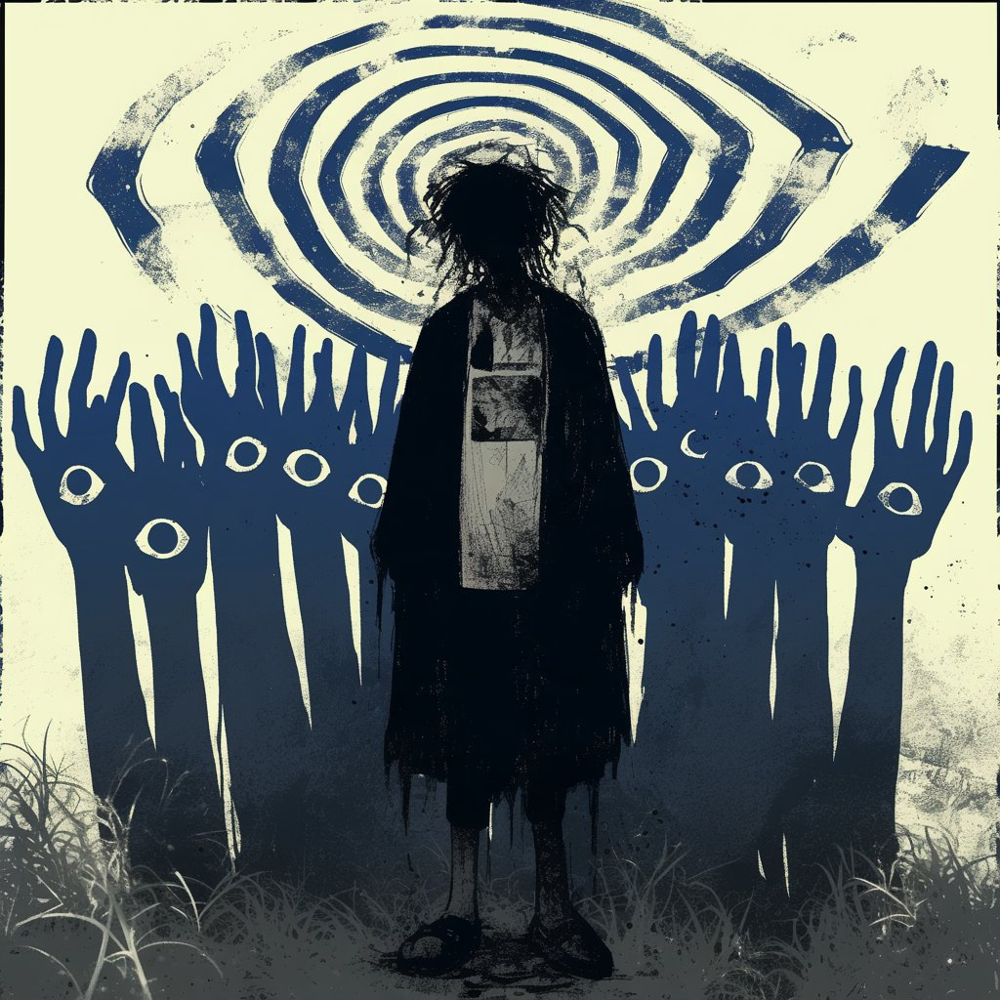
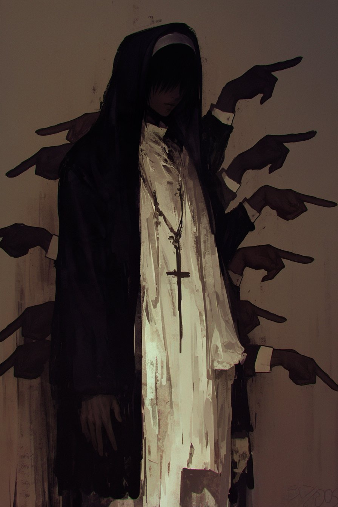
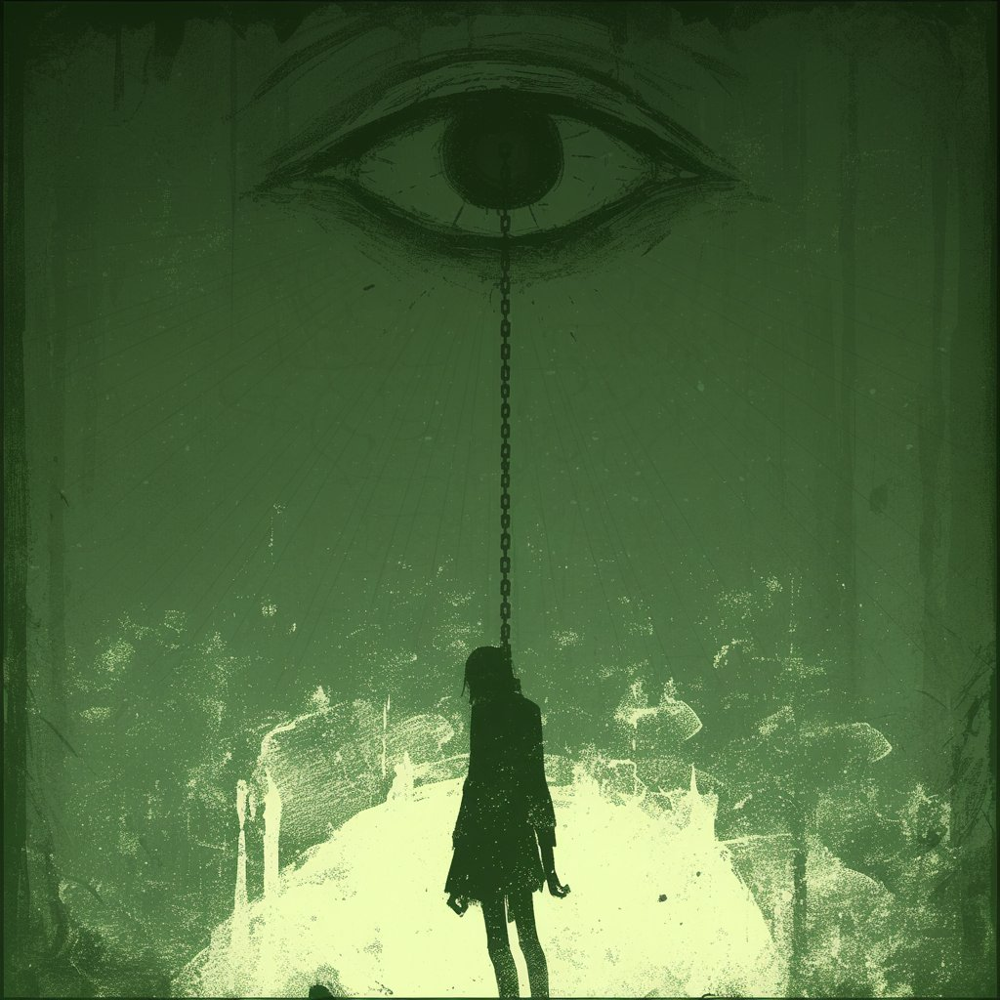

After that Saturday, Misha spent several days expecting his grief to have only just begun. He went to work and did what was required, while waiting for some further misfortune that would at last explain his condition. But nothing else happened. The bird remained in the forest, the blot dried at home, and in the mornings he had to get up.
The alarm woke him faithfully. Misha lay listening until the sound became harder to bear than getting up; then he sat on the bed with his feet down and was occupied for a while by that alone. His body had not refused to serve him, but every task had to be begun separately. There was enough strength for a shirt; after the shirt, he had to consider his trousers. Once outside, he joined the other people with relief: the metro escalators carried him, the crowded carriage, the custom of walking after whoever was in front.
At work, letters awaited him. Most could be dealt with briefly: “Received,” “I'll check,” “Yes, Irina Petrovna.” Sometimes he had to understand what was written. Misha read it several times and, when he finally understood, took up the assignment gratefully: now he knew exactly what was wanted of him. By evening there were enough messages in Sent. The day had been put to use, and he could leave.
No one asked about the bird. The company outing had gone normally. On Monday they were still discussing the overturned kayak; by Wednesday people had settled that memory too. Misha listened along with everyone. His presence required no particular attention as long as he nodded on time.
He soon learned whom to give which answer. Alexei needed “Fine”; Irina Petrovna, “Everything's in order.” His mother had to be told “Everything's good”: after “Fine” she fell silent and waited for more. He had to add a detail. Bought bread. It's warmer outside. A lot to do at work. All of it was true, and behind these little truths his mother no longer discerned what her son had not told her.
She said, “Well, thank God.” Misha listened on, waiting for the conversation to end: he wanted to hear his mother, but each question still required an answer. When she said goodbye, he sometimes put the phone back to his ear. Now he could simply listen, but there was no one left to listen to.
At home he sat on the edge of the bed holding his shopping bag. His jacket slowly warmed up and grew stuffy, but it did not occur to him to take it off. Once the butter softened and leaked through the seam of its wrapper. Then there was a task that could not be postponed: wipe the floor, put away the groceries, find a saucer for the butter. Misha did all this and afterwards took off his shoes.
Reaching for a clean shirt one morning, he caught a stack of drawings. The sheets spread over the floor; he stepped across them and shut the wardrobe. A white corner stayed caught in the door. That evening Misha saw it again and felt ashamed that he had been to work and returned while the sheet had lain all day pinched by the wood. He freed it. The corner would no longer flatten.
The drawings occupied two shelves beneath his clothes. At first he arranged them by date, so he would know where to continue, but then time became confused. An eye, another eye, a wing begun from the other side. Hundreds of attempts before the forest and afterwards; some had to be moved to reach a shirt. Crumpled sheets remained beside the desk, near the bed, under the radiator. They crunched underfoot at night, and Misha stopped, roused by the sound of his own paper.
Every evening he did sit down to draw. Hunger brought him to the kitchen, the need to present himself to people tomorrow brought him to the bathroom, but here he still came of his own wish. Sometimes an evening left a single line. He looked at it for a long time, as long as he could see where his hand had wanted to go next. Then that too became impossible to see, and he switched off the lamp.
The drawings did not comfort him. They took away sleep, spoiled paper, recalled what could no longer be brought back. Still, Misha could not give them up. He had no other occupation left for whose sake it was worth finding himself at home in the evening. He took out the next sheet and sat before it, not yet entirely deprived of his own work.
He saw in the New Year at his desk. He told his mother beforehand that he had been invited out and asked her not to worry later. At midnight there was shooting under the windows: people rejoiced at the addition of time. Misha held the unfinished wing beneath his palm. The celebration ended, and the sheet still lay under his hand; there was no need to leave his hosts and go home.
In January the lift broke down. Two days later it was repaired, but Misha continued to take the stairs. In the cabin he had to stand before his own face and travel with it to the ground floor. On the stairs he could look at his feet. The steps ended one by one, taking no part in his fate, and that was how he reached the exit.
One Monday Polikarpich carried a bucket onto the landing and sat on it beneath a notice forbidding the storage of personal belongings.
The paper was new, in a clear sleeve. Beneath the prohibition a space had been left for the signature of the person responsible, but no one had got round to signing. To Misha the unsigned prohibition seemed even more reliable: there was no one to ask for permission.
“Where are you going?” Polikarpich asked.
“To work.”
“And I'm waiting.”
Misha nodded. For the morning, the answer was sufficient. He had already gone down two steps when the old man added:
“For them to finish washing.”
Water lay on the stairs between the ninth and tenth floors. It smelled of wet cement and cheap lemon. The cleaner stood below, leaning on her mop.
“I tell him, go through. He sits down.”
“I'll walk through, leave tracks,” Polikarpich explained. “You'll have to wash it again.”
“Everyone walks through.”
“Well, I'll sit a bit.”
Misha stopped. The old man shifted the bucket to clear the way.
“You go. You've got work.”
Polikarpich spoke without mockery and did not invite him to stay. Misha suddenly resented this unoccupied freedom. The old man could sit until the stairs dried, could go back home; no report, no Irina Petrovna, no journey to the metro was allotted to him. Misha looked at his knees and envied even being able to keep them bent so long without preparing to go anywhere.
Misha stepped over the water.
“Porfiry Ivanych.”
The old man looked up.
Having called him, Misha could not immediately find what to say next. A ready “Nothing” would have spared them both the delay. He held the cold banister until the word passed, and the old man watched him all that time.
“You knocked that time. In November.”
“I did.”
“I heard you.”
Polikarpich stopped moving the bucket.
“Must've knocked well, then.”
The cleaner drew the mop towards herself. The old man lifted both feet to let the cloth pass. A pink heel showed through a hole in his gray sock. His sweatpants had bagged at the knees. For several seconds he sat before them like that, ridiculous and wholly occupied with not getting in the way of the washing.
Misha went down. On the third floor he noticed he was still holding the banister, though he usually didn't.
At the office entrance Stepan sat half turned from the door. Misha had not yet taken out his card when the lock clicked.
“Hello, Mish. How's life?”
“Fine.”
The word came without delay. Stepan turned to the monitor. Misha stood behind the glass, taking out the card he no longer needed.
They were moving cupboards that day. Making room for a new employee who had not yet been hired, though a desk had already been ordered. Alexei held a folder without a label.
“Yours?”
The folder contained old printouts and the instructions for a kettle that had broken back in the summer.
“Not mine.”
“Whose, then?”
Irina Petrovna said not to throw it out yet: it might be needed. They put the folder on top and moved the cupboard. By evening the folder was still there. No one asked about it again.
Over his spreadsheet Misha remembered the old man's raised feet. The cleaner had washed beneath him, then beneath the bucket, and their conversation had produced no additional task. He tried to imagine himself in the same place. Immediately he had to put his bag somewhere, explain why he was sitting, assure a passerby that he wasn't unwell. These preparations used up all his imagination. He never reached the sitting itself.
That evening Misha reheated some rice and ate while he remembered that he was eating. Then he began moving what remained to the edge of the plate. He recalled Polikarpich standing outside his door in November, talking about his wife, about three days without light. Back then Misha had wanted only one thing: for the old man to go away and leave him all the darkness. The old man had gone. Almost two months had passed, and Misha did not even know the name of the woman he had been told about.
The rice went cold. Misha got up, but instead of going to the desk with the paper he went to the coat rack and took his keys.
On the landing he stopped in shame: he had nothing to go for. January seemed late for answering a November knock, and people didn't visit one another without a reason; at least he hadn't for a long time. He could ask for salt or a screwdriver. He chose the screwdriver and climbed one floor; at the door it turned out that he didn't even know which kind he needed.
Something fell behind the door. Polikarpich swore. Misha raised his hand to the bell.
By Name
Misha rang.
Metal clattered behind the door.
“Who is it?”
“Me.”
“That's good. Who, though?”
The door opened before Misha could answer. Polikarpich held an adjustable wrench. A streak of flour whitened his right cheek.
“The tap?” Misha asked.
“Dough.”
“With a wrench?”
“The tap too.”
The kitchen was cramped with things Polikarpich had found time to disturb that day. Dough rose in a basin, a rusty screw protruded from the mixer tap, socks dried on the radiator. A passport lay open beside the phone, onion skin stuck to its cover. Misha surveyed this disorder with respect: in his apartment everything lay much more quietly, though there was no order there either.
“Can I help?”
“Wash your hands. Chop the onions.”
Misha washed his hands and took the knife. His sleeves were in the way; he rolled them up slowly, one turn at a time. No one asked what was wrong with him or why he was like that. Three onions lay on the board. Polikarpich went back under the sink. From there came creaks, breathing, and occasional words intended for neither tap nor listener.
“Why Polikarpich?” Misha asked.
“Because I'm Porfiry.”
“I don't understand.”
“There was another Porfiry in the shop. Drank. They mixed us up. Decided one of us would be Polikarpich.”
“And you agreed?”
“Why not? Good name.”
“But not yours.”
A hand appeared from under the sink.
“Pass the wrench. Not that one. The one with the loose jaw.”
Misha passed it.
“Forty years they've called me that,” Polikarpich said. “When's it going to be mine?”
The onions stung his eyes. Misha wanted to ask what the old man would have said if they had called him something insulting, but he climbed out, turned on the water and listened. For several seconds they both watched the tap.
The tap was silent.
“There,” Polikarpich said. “And you were worried.”
Misha hadn't been worried about the tap. Somehow he didn't want to explain this.
While the pies baked, Polikarpich made him hold the oven door.
“Won't it stay by itself?”
“It will. Only it shuts.”
The old man slid out the tray and peered underneath. Misha stood bent over, feeling his face heat up. It smelled of onions, hot metal, and something sweet, though there was no sugar in the filling.
“Do you always do it like this?” he asked.
“How?”
“Yourself. Taps, pies.”
“Who else is going to bake them?”
“You can buy them.”
“You can. Hold it straight.”
Misha held it. Four more uncooked pies lay on the table, uneven, with thick seams. Polikarpich marked one with a short cut.
“What's in that one?”
“Cabbage. Ran out of onions.”
“You gave me a whole bowl.”
“Then it's the cabbage that's gone. Don't remember. We'll eat it and see.”
Polikarpich was not distressed by his forgetfulness and did not apologise for the pies. He tasted the filling, adjusted the cloth under the tap and went back to the oven, as though each task could wait a little without his supervision. Misha watched and tried setting down his cup more decisively too, spread his elbows. This did not give the kitchen any more room. He had to move aside again to let the old man reach the stove.
“Move your hand,” Polikarpich said. “You'll burn yourself.”
Misha moved it.
At some point he realised he had been standing here for over an hour. Usually by now he would have imagined several times how to say goodbye, where to put on his shoes, what to say before leaving. Now the hand that had held the door ached. When Polikarpich reached for the tray again, Misha held the door with his other hand and asked him to hurry. His own impatient voice sounded too loud.
When they finally sat down, the flames of the burners were reflected in the dark window. Polikarpich brushed the onion skin from his passport and put it in a drawer.
“Pension tomorrow?” Misha asked.
“Changing the SIM. They said at the shop: the person it's registered to has to appear in person.”
“So you will.”
“I already appeared. They need Porfiry. I came and said, Polikarpich. They sent me back to fetch myself.”
Misha laughed briefly and immediately coughed. His chest cramped unpleasantly. Polikarpich pushed his cup towards him without asking what was funny. Misha took a sip. His spoon trembled, and he set it on the saucer.
The old man broke the first pie in half. Steam rose from it. Misha reached for a half before it was offered.

For the Night
He began talking about the bird after they had eaten. Polikarpich leaned the empty tray against the wall and turned on the radio. Misha said:
“I went into the forest that time.”
The old man didn't hear. Misha repeated it, more quietly now, and felt the whole difficulty of the coming story. To explain the forest, he first had to explain the paper, the bus, his own agreement to go. He had to begin so far away that he was afraid he would never reach the bird.
First he told him about the workshop. How he had stood before the notice, how many times he had called, how he had bought ink. He spoke in detail, too much detail. At first Polikarpich interrupted: where were they going, why kayaking in November, couldn't he have said he had something to do? To the last question Misha answered, “I could,” and fell silent.
The old man turned off the radio.
In the quiet, Misha wanted to take back everything he had said. He could still call the trip a failure, ask for a second pie and leave. Instead he told him about the eye.
About kneeling. About the stain under the feathers.
His voice broke on the last word. Misha cleared his throat but could not go on. Polikarpich sat opposite with a piece of pie in his hand. Then he put it down.
“A pity,” he said.
Misha looked at his fingers.
“Was it small?”
“Not very. About this.”
He spread his palms. That was its size. Showing the size proved simple; explaining why he still couldn't speak about it did not.
“A lot die in winter,” Polikarpich said.
“It isn't about winter.”
“What's it about?”
He had to return to the notice, to the eye on paper. Misha heard himself from outside: a grown man had missed a drawing class, found a bird in the forest. The old man was listening. Now he had to say something else, or the old man would decide this was the whole story.
“It was my bird.”
“Did you take it home?”
“No. I don't mean that.”
“Quite right. No point dragging dead things home.”
Misha pressed his palms between his knees. He felt ashamed of his misfortune: in someone else's kitchen it would not fit an ordinary account. Any moment he would be told he could draw another one, find another one, that life was long. He knew these words in advance and still could not ready himself for their consolation.
“You don't understand.”
It came out sharply, almost angrily. Polikarpich looked at him.
“I don't,” he said.
And took the teapot.
Misha waited for a “but.” The old man poured tea and set the pot back. A drop fell on the tablecloth. He rubbed it with his finger.
Misha wanted to leave. Instead he said:
“I haven't wanted anything since.”
Now the old man stopped fussing with the drop.
“Nothing at all?”
Misha nodded, then shook his head. He couldn't answer. In the morning he wanted evening to come sooner. In the evening he wanted morning not to come. He could recall no other wishes just then.
“I sit down to draw,” he said. “Every day. But why I get up afterwards, I don't know.”
Having said it, he fell silent. He had never admitted this to anyone. Now he watched the old man, waiting to see how he would take it.
Polikarpich pushed a saucer towards him.
“Want a pie?”
“No.”
The old man took the saucer away. He was not offended, did not say that he must eat. He sat and rubbed the bridge of his nose. You could see him searching for something to say and finding nothing.
The refrigerator hummed for a long time, with a slight rattle inside. Misha listened, unable to find any more words. At home he would have got up to check the door and thermostat, to occupy his hands and end the silence. Here the refrigerator belonged to someone else, and Polikarpich himself did not leave the table. They had to stay together.
“I need to go home,” Misha said.
“Go on.”
At the door the old man pressed a parcel into his hands all the same.
“For tonight. Don't want it now, have it tomorrow.”
Misha took it. On the stairs he pressed the warm paper to his chest to reach his keys. He stood like that until he managed to get the key into the lock.
At home he ate one pie. The onion came in large pieces, still crunchy. He had chopped it like that himself. He left the second on the plate, then returned and ate it too.
At home everything he had left was waiting. A crumpled sheet lay beside his slipper, another white corner stuck out of the wardrobe. Misha sat on the bed and lowered his head; there was no relief he could have brought back from the old man. Only the taste of coarsely chopped onion remained in his mouth. He sat until that taste too had passed.
The next evening he reached the tenth floor again. A television was playing behind the door. People spoke loudly, interrupting one another; sometimes Polikarpich answered them. Misha stood without ringing. Yesterday he had already said too much. Today the old man would surely ask how he was, and Misha had no other answer.
He went back down.
At his desk he tried to draw a single feather. While he traced the centre, the line held. Near the edge it began to resemble the broken shaft on the forest leaves. He crumpled the sheet. Took another. By midnight there were four more balls on the floor, and Misha could not remember whether he had eaten after work.
His mother called.
“Mish, how are you?”
“Everything's good, Mum.”
“Really? I called in the afternoon.”
“There was a meeting.”
There hadn't been a meeting. The phone had lain face down beside his keyboard. Misha had seen its edges light up.
His mother told him Aunt Zoya's pipe had burst and now they were looking for tiles of the same colour. Misha asked about the neighbours at the right moment. They hadn't been flooded. Aunt Zoya had heard hissing, switched off the television, and the hissing remained. His mother laughed. Misha made a brief sound too; he knew where it belonged.
“What are you doing?”
“Drawing.”
This turned out to be true. He looked at the sheet before him and for some reason covered the unfinished eye with his palm.
“Well, there,” his mother said. “Good. You used to love it.”
Misha wanted to say, “I still do.” He couldn't. Then he wanted to tell her about the pies and the man who had not understood and had not left. His mother was already asking whether his flat was warm. He said it was.
After the call Misha put the phone beside his pen. His mother still did not know what was happening to him.
The Right Kind of Old Man
Over the following weeks Misha several times intended to go upstairs and didn't. Once he had already put on his shoes, sat down to tie them and remained sitting. The next morning the old man asked whether he had any bread: he'd forgotten to buy it yesterday. Misha brought half a loaf. Polikarpich cut himself two slices and asked where he kept disappearing to.
“I'm at home.”
“I know you're at home.”
That was how they began to see each other. Not every day. Sometimes Misha noticed his slippers on the landing and went back for something forgotten, which he then spent a long time choosing in the hall.
In the mornings he left two minutes early and lingered with his keys, listening to the tenth floor. If the old man didn't appear, he had to travel alone, angry with himself for those two minutes. Ringing the bell was harder: yesterday Polikarpich might have sat with him out of politeness, and today already have affairs of his own. In the evening Misha heard water through the ceiling, footsteps, a chair being moved briefly. The man lived upstairs whether Misha had the strength to climb up or not. These sounds made it less empty to sit at home.
Meanwhile Polikarpich did things for which Misha could find no common name. Returned sour milk without beginning with an apology. Refused to discuss with a neighbour whether it was decent for a man his age to buy a yellow scarf. Bought the scarf, then gave it to his grandson because it made his neck itch. Could say, mid-conversation, “I'm tired,” and close the door. Opened it the next day as though nothing had happened.
Misha thought the old man had somehow rid himself of the need to keep all his acquaintances in his head at once. Before Misha had time to want anything, he already knew who would find it funny, who would be hurt, to whom he would have to explain. Polikarpich bought a scarf for his neck; if the neck refused to wear it, he gave it to his grandson. Misha wanted to adopt this simplicity whole. Then he came home and sat down without taking off his shoes. He remembered the old man's words well, but they were not enough for the smallest movement.
One lunchtime Misha stayed at his desk when Alexei went to the canteen. The spreadsheet was still on his screen. He minimised it, took out a sheet and laid it before him. Four hours till evening; he could at least begin now.
For ten minutes he drew the edge of a wing. Then he grew hungry. The line was already going, and interrupting it seemed foolish, but he kept looking at the clock. At last he laid down his pen. All that remained in the canteen was cold macaroni and a cutlet stuck to one side of the plate.
He ate the cold cutlet and resented the injustice of his own occupation. Not one person had told him to draw at lunchtime; he had waited for paper all morning himself, then sat over it as over an assignment that must be completed. The last people were leaving the canteen. Misha hurried to finish, though the only place he had to hurry to was the same desk.
Back there, he looked at the wing. A row of identical feathers, diligently finished. The last feathers he had drawn out of habit, barely looking at what was emerging. Misha put the sheet in a drawer, but didn't tear it.
That evening Polikarpich was busy at the letterboxes. Misha helped him pull out a trapped advertising paper. They discussed the postman who kept mixing up the floors. Misha said nothing about the sheet in his desk drawer. He didn't yet know himself what had happened to him.
At home he wanted to take out paper again. He passed the desk on his way to the kitchen and stopped at the window. Below, they were unloading a van: a man in a blue jacket pushed boxes to the edge, a second man took them, pressing them to his chest. Misha watched the second man's hands for a long time. Each time they found a new place on the cardboard. One box he embraced from beneath; another he turned before lifting. At some point the first man failed to pass the next box, and the second stood with his palms extended.
Misha returned to his desk. This time he drew two hands. Nothing special: four fingers stuck together, the thumb too far out. He tried again. He didn't notice the tea go cold.
Then he remembered the wing and compared the sheets. The hands were drawn worse. Yet he wanted to look at them. Not rejoice, not show them to anyone: simply not look away for a little longer. He left them beside the lamp and put the wing away. Before bed he noticed that not a single crumpled sheet had been added. He almost resented himself for counting.
In the morning he looked at the drawing again. The hands seemed an ordinary sketch, and a poor one at that. Misha could not restore yesterday's attention merely by remembering that it had existed. He only noticed how he was once again hurrying to call the drawing bad so he could do nothing more with it.
On Saturday they went to buy a washer for the tap.
Polikarpich said he knew a place. It proved to be on the other side of the neighbourhood, in a basement below a pharmacy, and closed. A notice on the door read: “Back in 15 minutes.” The paper had yellowed at the edges.
“Been on a break long?” Misha asked.
“Was last time too.”
“And you brought me here?”
“He opened up last time.”
They waited. People passed with pharmacy bags. A woman with a child stopped to adjust a mitten; the child planted one foot on the bottom step and examined Polikarpich. The old man showed him the worn washer pinched between his fingers.
“A wheel,” the child said.
“It is.”
“Off what?”
“A tap.”
His mother pulled him by the hand, but he kept looking back.
Ten minutes later Misha took out his phone and found a shop two blocks away. Open till nine, reviews praising the selection. Polikarpich looked at the screen.
“Let's go,” he said.
For some reason Misha had expected an argument. As they walked, he began several times to explain that you could use the internet to check opening hours in advance, but each time the words proved unnecessary: the old man was already walking beside him.
At the shop, washers came in a pack. Misha took one; Polikarpich told him to put it back.
“Eight in there. I need one.”
“Might need another.”
“When we do, we'll get it.”
The shop assistant intervened: they didn't sell them separately. Polikarpich looked at him, then at the pack, and paid.
Outside he took out the one he needed and put the rest in his pocket. Misha waited for more. He wanted to understand who had yielded here and why no one had been humiliated.
“The others?”
“They'll keep.”
“You said you didn't need them.”
“Got them now.”
Near home Polikarpich stopped beside the swings. The chain was twisted and the seat stood on edge. He passed it between the hanging chains, untwisted it, pushed it with his palm. The seat went forward and returned with a short squeak.
Misha held the bag and watched. The old man pushed the swing again, more gently.
“Grandson coming?” Misha asked.
“No.”
“Why, then?”
Polikarpich caught the seat so it wouldn't strike his legs.
“It was twisted.”
Misha wanted this answer to explain something in his own life too. Untangle something, push it with your palm, let go, and let it go on by itself. He already knew that at home things did not go on by themselves.
The swing still moved. Polikarpich went towards the entrance. Misha waited for the seat to swing back, then caught up with him. At the entrance he held the door.
Part Two. What Comes Out Instead of a Bird
The Crossbar
Polikarpich found him in the basement.
A notice about the basement said that the remaining property would be removed as unwanted. On Tuesday Misha remembered his chair, on Wednesday he intended to fetch it, on Thursday he remembered he still hadn't gone. He lay through most of Saturday, almost until dusk. He expected nothing more of the day, and only then did it become easier to get up for his jacket. That chair had once been comfortable for drawing; as long as they hadn't taken it away, the comfort could still be brought home.
The chair stood behind a pipe, buried under empty boxes. Misha moved the top one and set it on the floor. Beneath it was another, full of wallpaper scraps. When he pulled it towards himself, white crumbs showered out of the corner.
He stopped. Already he wanted to abandon everything and go upstairs. No one needed the chair or the boxes, yet they held one another so tightly that they might have been brought here for that very purpose.
Misha crouched and pushed his arm between the wall and a valve. His sleeve caught. He jerked, heard a short tearing sound and froze.
Suddenly he was hot. He wanted with great clarity to wrench the chair out in a single movement, boxes and all, and throw everything into the middle of the passage. Let it lie. Let someone else squeeze past afterwards.
Clutching the crossbar, Misha suddenly felt strength enough to tear out the chair and scatter everything else along the passage. This strength had found itself, without his asking. An hour before, putting on socks, he had needed to rest with his elbows on his knees, and now he could ruin a good deal of someone else's property in a minute. Misha held the chair and was angry also at how unevenly he was made.
He had already begun explaining to himself that there was nothing to be angry about. No one had asked him to come down here, it was his own fault, he could buy a chair. With each explanation his fingers gripped the wood harder.
Footsteps shuffled along the passage.
“Found it?” Polikarpich asked.
Misha turned his head. The old man stood with a torch, lighting the ground at his feet.
“Found it. Won't come out.”
“Show me.”
Polikarpich shone the light over his shoulder. Misha waited to be told to move aside, give up his place and watch another man immediately do what he had failed to do. This made him hotter still.
But the old man stayed in the passage.
“Light here?” he asked.
“A little lower.”
The beam descended. A leg of the chair showed, hooked behind the pipe. Misha freed his sleeve, took a different hold on the back and turned the chair. It came out easily, catching a box with the corner of its seat.
He set it before him. For several seconds he did nothing. His heart still beat quickly, and he had to put somewhere the force with which he had just been about to wrench it. He passed his palm over the seat and brushed off the dust.
Under his fingers he found a hollow in the wooden crossbar. Misha knew it. He used to rest his foot here while reading at a table. His big toe always found the hollow before he had even settled comfortably.
He traced it again. Remembered a strip of sunlight on the floor of his old flat. His own bare foot. What he had been reading, he couldn't remember.
Misha bent towards the seat so the old man wouldn't see his face. The chair had yielded its old hollow, and with it a strip of sunlight in a room he had left long ago. After lunch the sun reached the crossbar, and he had to finish reading before going somewhere. Where, he couldn't recall. Only the hurry remained: after reading, another desired occupation still awaited him. His former life had been enough for two occupations at once, and he had thought nothing of it.
Now he couldn't raise his head. Polikarpich stood nearby. Misha waited for him to notice, begin consoling him or pretend nothing was happening. A tear fell on the dusty seat, leaving a dark circle.
“Your sleeve's torn,” Polikarpich said.
“I see.”
“Could mend it.”
Misha looked at the old man. He still held the torch below Misha's shoulder, where he had been asked to. The beam rested on the empty place behind the pipe.
“Later,” Misha said. “I'll bring it.”
He stood and lifted the chair. At the door he paused and moved the wallpaper box against the wall to leave room to pass. Polikarpich silently lit the ground beneath his feet.
On the stairs they met a neighbour. She saw Misha's dirty knees, the chair, and opened her mouth.
“A chair,” Polikarpich said.
She closed her mouth and passed.
Misha laughed, unexpectedly loudly for the staircase. The laugh broke off halfway through a breath. He turned to the wall, waited and lifted the chair again. Polikarpich followed, steadying a leg on the turns.
On the ninth floor Misha said:
“Thank you.”
The old man had already let go of the leg and now stood with his arms down.
“Get it inside. Heavy.”
Misha opened the door with his shoulder. His thumb still rested in the hollow.
The chair proved lower than he remembered.
Misha set it at the desk, sat down and put his hands before him. His elbows rose too high. The stool was more comfortable. He tried a folded blanket, then removed it: it slid about and had to be held in place with his thighs.
For three days the chair received clothes and folders, gradually becoming part of the domestic accumulation. On the second evening Misha sat before the paper until the lamp made him nauseous. More drawings fell from the wardrobe; he pushed them back and struck the chair with his foot. It hurt that so much effort in the basement had produced only another obstruction in the room. On Wednesday he put the chair with its back to the radiator and sat. The radiator was warm, and for now this purpose proved sufficient.
He sat sideways with a sketchbook on his knees. Beyond the glass fine, sparse snow was falling. In the windows opposite, people moved between rooms, and Misha noticed that he had long ceased to think of them as people. The lit rectangles were part of the view. A man appeared in one, raised both arms and drew the curtains. This simple movement made Misha uneasy, as though he had been peeping, although until then he had not been looking at anyone.
A back stretched across the sheet, a small head above it, its beak lowered. Misha wanted to carry the line down to the tail, but stopped: there wasn't room for the wing. He began crowding the feathers together, and the bird drew its head further and further into its shoulders.
Misha turned the page. Began again. Another back, only higher now, heavier. He pressed the pencil and broke its point. The fragment fell on his trousers.
He had to get up for the sharpener. It wasn't in the drawer. He searched a second, then a third, and found it in the kitchen beside the batteries. All the while a movement continued inside him: stretch the neck, look round, check whether anyone was watching. Misha stopped in the middle of the kitchen.
No one was watching.
He stood holding the sharpener until he heard himself breathe out. His shoulders lowered. Not immediately: first one, then the other.
Returning to the window, he took the chair's crossbar to draw it closer. His finger found the hollow, and again he remembered the strip of sunlight on the floor. Misha waited. What had happened in the basement did not repeat itself; he merely wanted to leave his hand on the wood a little longer. He did. Then he sat and sharpened the pencil over the open sketchbook. Shavings lay beside the unfinished bird.
Thursday
February passed, leaving paper behind. This sheet with the dark wing had been started before the electricity bill, that one with the torn edge on the evening of two calls from his mother. Misha distinguished the sheets better than the days he had lived. Take one out of the pile, and it turned out that beyond the wing and the call, almost nothing of that day remained in his memory.
He still couldn't draw.
The birds came out heavy, with short necks and wings folded too tightly. Misha erased them until the paper frayed. Tried beginning with the wing, but the strokes merged into a single dark plane. Tried the eye: it became a hole behind which someone was hiding.
Once he sat beside the desk to pick up scattered sheets and didn't get up. The carpet was cool. He didn't have to hold his back upright or look at the white. He lowered himself onto his palms, shifting his weight until his hips stopped aching. His face was above the floor. There was no one to present it to.
Later he sat on the floor again. Not a single bird came out better for it, but here he could keep his head down for a while. On a chair he involuntarily straightened up, as before other people; the floor allowed him to be heavy without apologising to anyone for his weight.
Sometimes the basement irritation returned in this quiet. Without the pipe, without the torn sleeve. He recalled an unread letter or something said during the day and suddenly felt how tightly his teeth were clenched. At first he sought a distraction. Then he began to wait a little: sat until he could distinguish what had hurt. He didn't always find it. Sometimes the letter proved innocent, and instead he remembered a conversation two days earlier in which he hadn't even noticed that he was offended.
Another evening brought a wish to phone his mother. Not to ask whether everything was all right: they had spoken the day before. He wanted to hear her walking about the kitchen with the phone, opening a cupboard, setting down a cup as she continued her story. Misha had already prepared a question about Aunt Zoya, but when his mother answered he only asked:
“Are you busy?”
She said no. He listened to the cupboard door close and for some reason couldn't immediately continue.
Halfway through the conversation his mother asked whether everything was good. He gave the familiar answer and suddenly heard her breathe out. How many times he had used this exhalation to be left alone sooner. Now he was sorry to hang up.
“Mum, tell me something else,” he said.
“What about?”
Misha looked at his legs on the carpet.
“Anything.”
His mother paused, then began talking about Aunt Zoya's new neighbour. Misha didn't catch everything, only pressed the phone closer, till his ear hurt. In that kitchen a household of its own continued: new curtains were needed, the neighbour turned out to be noisy, and his mother still hadn't told it all. He listened until she herself grew tired, and asked her to give Aunt Zoya his love. After the call he did not immediately get up. The evening had passed, but now he was sorry to count it wholly lost.
In the daytime everything went on as before. He answered letters, talked, and by evening could barely remember how the hours he had lived differed from one another. Then his finger suddenly caught the torn edge of his sleeve, and he remembered Polikarpich patiently holding the torch. Gratitude arose, and with it embarrassment: he had managed to be angry at the old man too. Once, one feeling would have had to be put away for the other. Now Misha walked for a while with both, not deciding which to count as real.
Late one evening he went out onto the landing. Something in the flat was always in the way: the carpet edge, the refrigerator hum, his reflection in the dark window. Here it smelled of cool concrete. One bulb was lit.
Misha squatted, then put his palms on the floor. He wanted to understand what had happened in the basement before the chair yielded: how his weight changed when he stopped pulling and began looking for another position. There was nothing to pull here. He leaned forward a little, paused, felt the strain in his arms. He swallowed. Already he was ashamed, although no one saw him.
The mechanism hummed behind the lift door. Misha wanted to stand, but his narrow trousers restricted his knees. He had to move one foot first.
A woman came out with a boy. The same boy who had examined the washer at the basement shop. This time he carried a plastic lorry without its body.
The boy stopped.
“What are you?”
“A dog,” Misha said.
He said it to have something to answer. Then heard his own word. Quite unlike what he ought to have said to the boy's mother. Misha looked at her, preparing to explain that everything was all right.
“No, you're a man.”
His mother took him by the shoulder.
“Don't bother him. He's probably looking for something.”
“What are you looking for?”
Misha sat back on his heels. White dust covered his palms.
“Haven't found it yet.”
“I've got a wheel at home,” the boy announced.
His mother led him to the door opposite. He looked back while she searched for her keys. Misha stood, but couldn't think of anything worth calling after them.
At home he washed his hands for a long time. A dark line remained under his nail. First he recalled the woman's face: surely she would greet him differently now. Then the boy's “No, you're a man.” Misha smiled at his fingernail. Once, that encounter alone would have been enough to keep him from ever going out onto the landing without a reason again. Now he still wanted to try once more. While inventing an explanation for the neighbour, he had entirely stopped noticing what he felt.
On Thursday they left him two reports from which one trustworthy report had to be obtained. One contained new amounts, the other old delivery numbers. Misha agreed to stay and prepared to feel wronged: he had waited for home all day, and now he must give up another evening. Irina Petrovna put the delivery notes beside him and went to call logistics.
But the first half hour passed unnoticed. A line had been omitted from one email. A delivery note thought lost was found. He called logistics, spoke with a woman whose name he didn't know, and together they reconstructed the discrepancy. When he hung up, Irina Petrovna asked:
“Sorted it?”
“Here, yes. I'll look at the rest.”
Already in the doorway, Irina Petrovna said, “Misha, save the final version separately,” and went into the next office. Misha continued. He no longer thought about staying late until he reached an empty cell: data had to be entered from an email that hadn't arrived yet. Then he could hear the light humming and the cleaner moving a chair behind the partition. His shoulders immediately grew heavy. It turned out he had spent almost an hour not waiting to be released. Now the hour was over. Misha didn't know why this was almost hurtful.
At home he opened his sketchbook. He wanted to hold on to the distinction: in the office he had been doing what he hadn't wanted that morning, and suddenly found himself inside the work. Here, before his own paper, he could again sit an hour without daring to make the first stroke.
He wrote on the back of a sheet: “Why a bird?”
Looked at it and crossed it out. The question sounded like an essay topic.
He tried to recall what he had wanted then, before the kayaks. To draw the eye. To see the whole bird. To enter a studio where other people would sit before the same kind of paper and no one would ask why he needed it. But beyond that the memory became too smooth: everything in it explained what happened afterwards. Even standing at the studio door now recalled a missed opportunity. At the time he had simply put his palm on the wood. Knew neither the clearing nor the future conversation with Polikarpich.
Misha turned the sheet. Tried drawing a line without promising anything by it. The line curved and stopped near the edge. He wanted to carry it downwards, but suddenly recalled the black feather shaft on wet leaves. His hand froze.
He stayed sitting like that. He was not choosing between work and drawing, not going to justify himself to anyone. He needed to understand why his hand reached for the paper and why, having reached it, it so often stopped.
Next morning another error turned up in the report. Misha and Irina Petrovna worked through the lines until half past eleven. Yesterday's absorption was no help: now he wanted to be left alone. In one place he had made a mistake; in another, the source data had changed again. He had to call the same woman in logistics. This time he asked her name.
On Friday Alexei invited him to the canteen.
As they walked, Misha recalled the loader's hands on the cardboard box. Yesterday's line at home was as unfinished as the gesture of a man who hadn't been passed the next thing yet. He tried to recall exactly where his pen had stopped, but Alexei was already asking him something.
Alexei was talking about winter tyres.
“You need to change all four,” he explained. “And I think: the back ones are still good. Why throw good ones out?”
“So did you change them?”
“All of them. They said, either all four or we won't do it. I said, what about somewhere else? They said, go somewhere else. Politely, too.”
In the canteen they sat by a window. Outside, loaders were taking a large refrigerator out of a van. One walked backwards all the time; the other directed: more, more, stop. Misha watched while Alexei picked a bay leaf out of his soup.
“You were here late yesterday?” Misha asked.
“Till eight. Kravtsov brought the delivery notes.”
“I didn't notice when you left.”
“They took us to logistics.”
Misha looked at him.
“Something not adding up?”
“It all added up. He couldn't make it earlier.”
Alexei put the bay leaf on the plate's edge and continued about tyres. He yawned into his hand. Misha noticed he was looking at the curve of his fingers. Then raised his eyes: Alexei awaited an answer to another question about tyres, which he had missed again.
Alexei turned the bay leaf stuck to his fork.
“Come to think of it, there was a fridge in that forest too. See it? No door.”
“Which forest?”
“Where we went rowing. I went off afterwards. For a pee. There's a fridge behind the fir trees, tyres too. I thought, how did they get it here? Didn't carry it on their backs.”
Misha looked at him.
“Did you go far?”
“No. Where the clearing is. A dead crow there too. Nearly stepped on it.”
Someone in the canteen dropped a spoon. Misha heard them picking it up, laughing, asking for another.
“What crow?”
“A dead one. Didn't examine it.”
“Under a fir?”
“Under a fir, probably. Firs everywhere.”
“What colour?”
Alexei looked surprised.
“Ordinary. Gray.”
“All gray?”
“Misha, I didn't go there to talk to it. A small one. Young, maybe. Wondered whether someone poisoned it. Didn't fancy eating the barbecue after that.”
Misha laid down his fork. He wanted to say it hadn't been small, its feathers were black and white, and the words almost came out. But he didn't know where exactly Alexei had looked, from which side he approached. He spoke of firs, a clearing, a body beside the path. Misha remembered no other clearing.
“You saw it too?” Alexei asked.
“I did.”
“Like I say, people dump rubbish. Then act surprised.”
He drew his glass of compote towards him. A wet circle remained on the tablecloth. Misha looked at the circle a while longer, then took up his fork.
They finished. At the exit Misha said:
“Listen, show me sometime what you do with them. I keep taking the totals and skipping the rest.”
“With what?”
“The delivery notes.”
Alexei thought.
“Got to know what goes where. I'll show you.”
They went back the same way. Misha tried to tell him about the loaders he had seen from the window, but Alexei was already talking about the printer: paper was jammed, and they had to get back before someone pulled it out by force. At the entrance he held the door while Misha shook snow from his shoes. They never got round to the drawing.
Later it turned out that Misha wasn't on the holiday schedule. They had drawn it up in September; HR had marked his entry “Confirm dates” and left it at that. Irina Petrovna asked why he hadn't come earlier. He didn't know what to say: he had kept waiting to be asked, then stopped remembering he was waiting.
The following week Alexei forwarded an invitation to a meeting that had already ended. Misha had been needed to explain a discrepancy in the dates, but they had copied an old mailing list without him. He had to explain separately, in the corridor.
By then the new employee's desk stood by the window. A box of paper and a spare keyboard had settled on it. They were still looking for the employee.
Someone Else's Hand
“Let me see,” Polikarpich said.
Misha brought him a folder. Not all at once: a few sheets first, then he went back for the rest. The old man spread the drawings beside the bread bin.
“Who's this?”
“Supposed to be a bird.”
“And this?”
“That too.”
Polikarpich turned the sheet.
“Heavy wing.”
“I know.”
“Why ask, then?”
“I'm not asking.”
“Why bring it, then?”
Misha sat. The question was unpleasantly exact, but not for the reason he would have liked. He had brought the drawings so the old man would see in them what he himself did not. Say: there it is. Put a dry finger on the right spot. After that he could go home and continue.
“You always know what you want,” Misha said.
Polikarpich moved a sheet away from a wet ring on the table.
“Not always.”
“Almost.”
“Wanted soup today. Salted it twice. Don't want it now.”
“I don't mean soup.”
“I do. A whole pot. Shame to pour it out.”
They ate the oversalted soup. Polikarpich added boiling water to his bowl. Misha didn't, though he wanted to. Then he did.
The old man looked through the drawings again after they had eaten. Stopped at the one with the heavy neck.
“This one's angry.”
“It isn't angry.”
“Well, that's how it looks to me.”
Misha took the sheet. Irritation rose from his throat to his cheeks, but behind it was something else. In the drawing the head had almost sunk into raised shoulders and dense plumage. He had drawn strength; the old man saw anger. It was hurtful. And yet now Misha saw exactly how he had laid down the stroke: thickly, over the one before, leaving no gap.
He put the sheet in the folder without crossing it out.
On Sunday Misha went into an art supply shop.
The young woman at the counter asked what he was looking for. He said paper. She asked what for. He answered: ink, a dip pen. She took out two packs and began explaining the difference. One could be touched; the other shouldn't be opened. Misha ran his fingers over the exposed sheet.
“This one absorbs,” she said. “The line will spread. Is that the effect you want?”
Misha looked at the paper in her hands. He wanted to buy the kind he would finally be able to draw on; the young woman said nothing about this property, and he couldn't ask without explaining the rest.
“What if I don't want it to spread?”
She showed the second pack. Nearly twice the price. He bought it.
At home he left the new pack unopened for a long time. The shop assistant had already said everything good about the paper, and now it only remained to let it down with his drawing. The old sheets had no such honour: one spoiled sheet among the others changed almost nothing. Misha took the old paper and put the new in a clear space where it could remain flawless for now.
The bird contracted on the branch again. He tried to extend the neck, mark out the shoulder, but every new stroke crowded it further. When no room remained, Misha kept going over the same feathers with the pen. The paper wore through. A little black spot appeared on the desk beneath it. He covered it with the sheet and sat.
The doorbell rang. Misha didn't move. It rang again.
“Take your jacket,” Polikarpich said from outside. “Am I to hold it till morning?”
Misha got up. On the way he turned the drawing face down.
Polikarpich stood with the mended jacket: Misha had finally given it to him that morning. A large gray seam ran along the sleeve. The old man glanced over the hall and said nothing about the things on the floor.
“Couldn't find black thread,” he said.
Misha tried it on. The sleeve pulled a little when he bent his elbow. The old man told him to take it off, unpicked two stitches and sewed it looser, right there in the kitchen.
“Now?”
“Good now.”
Polikarpich tucked the needle into his own shirt collar. He saw the face-down sheet but didn't reach for it.
Misha put a palm on its edge. He could put it away in the wardrobe with the others. The old man was folding his glasses and asked nothing about the drawing.
Misha turned it over himself.
“There.”
The old man drew it closer.
“It's cold,” he said.
“Why?”
“All fluffed up. They sit like that on our river.”
Misha drew the sheet towards him. For so many evenings he had looked at the failed neck that he no longer noticed the small beak protruding from the feathers. The old man had found time to pity the bird before Misha explained the error. Now he too could see it sheltering in its densely hatched plumage. The paper remained the same; nothing on it had needed correcting.
Polikarpich left. Misha took the new paper out of its bag, held it and put it back. He left the drawing on the desk. Passing for water that night, he stopped beside it but didn't switch on the lamp. In the faint kitchen light the bird almost merged with the paper.
“It's cold,” Misha said aloud.
The word could be heard throughout the quiet room. Misha hadn't said anything here for a long time that was not intended for the phone, and now he felt caught, although there was no one at home.
The next evening his mother called herself. She had been looking for documents in a cupboard and found a folder of his school exercise books.
“Thought the certificate was in there. Nothing but your artwork.”
“What artwork?”
“Houses. A tank. Remember the birds? You used to draw them with a ruler.”
“A ruler?”
“You were eight. Or nine. Kept straightening the wings. Drew one, measured the other to make it the same. Lost your ruler and cried so much.”
Misha looked at the pencil beside the phone.
“I don't remember.”
“I'll photograph them.”
He wanted to ask her to wait, but she was already saying she needed her glasses and the phone kept making everything dark. For several minutes they worked out how to switch on the lamp and where to put the sheet.
Three pictures arrived. The first showed a strip of carpet and the edge of her slipper. The second the whole drawing, tiny. He managed to enlarge the third.
Birds went across the page in rows. All had triangular wings, a long line down the middle, a black circle for a head. Beside one some figures remained: he had measured the wingspan. The photograph showed grooves left by the hard pressure of the pencil.
“See?” his mother asked.
“I see.”
“Didn't throw them out. There are more.”
After the call Misha moved the picture about with his fingers for a long time. Examined the margins, a stain near the edge, his own childish figures. None returned as a memory. The drawing was his, his mother had kept it for years, and he looked at it almost as at a stranger's. Eight years old. A child pressed on a pencil, grew angry at a crooked wing, ran to look for a ruler. His mother remembered how he had cried. Misha himself could not even remember the room where it happened. He wanted her not to put the exercise books away while he was looking.
He saved the picture. Wanted to call again and ask where the birds had come from, but his mother had already said everything she remembered. Misha put the phone beside the folder. After a while the screen went dark.
Part Three. The Bird No One Ordered
On the Pipe
At the end of February the temperature stayed above freezing for several days. The snow outside the office subsided. Cigarette ends emerged on the asphalt, and Stepan went about gathering them into a jar, pausing at the door from time to time to admit someone with a pass.
The bird sat on the bend of a drainpipe.
Misha saw it from below: first the claws on the flaking metal, then the narrow breast, folded wings, black eye. An uneven pale patch showed beneath its throat. A gust lifted the feathers on its side, and the bird shifted its feet without releasing one claw.
He stopped.
It turned its head.
That one.
Misha recognised it at once, before he had even looked properly. Stepped forward. It grew tight to breathe. For several seconds he watched, unable to remember what he had intended to do with the pass in his hand.
Then he remembered leaves. A fir tree. Clenched claws. Cold coming from within.
No. A similar one.
The bird bent, examining the pipe's edge, and put a thin pinkish leg out of its feathers. The claws adjusted their grip on the metal. Misha resented this detail: it was foreign to his grief, too occupied with ordinary bird life. He sought a return in the bird, while all it needed just then was to keep its footing in the wind.
Stepan came out with his jar.
“Hello, Mish. What are you standing there for?”
“A bird.”
Stepan looked up.
“Shit everywhere,” he said without malice. “Right over the entrance.”
The bird lifted off the pipe. For a second its place was still there: the iron bend, a space of air at which two people looked. Then Stepan bent for a cigarette end and the place disappeared.
Misha was three minutes late. Irina Petrovna said nothing.
In the toilet he locked himself in a cubicle and stood with his forehead against the cold partition. Someone came in, washed their hands. Misha waited for the footsteps to fade, then wiped his face on his sleeve, though his face was dry. At his desk they were already asking whether the email had arrived. He answered. His voice had barely changed.
For the rest of the day Misha kept himself at his desk so as not to go to the window without a reason.
At first because the bird had already flown away. Then because he didn't want to discover how strongly he awaited its return. At lunch he went all the same. From the third floor he could see the drainpipe sideways; a wet leaf lay on the metal, its stem caught against a joint.
Could this leaf have looked like a pale patch under the throat that morning? From below he might not have seen clearly. Misha peered for a long time until someone behind him asked:
“What's out there?”
Alexei held a mug by its rim, burning his fingers.
“Nothing. A bird was sitting there.”
“A crow?”
“No.”
“We've got pigeons on the air conditioner at home. My wife says put up netting. How, if they're already there? Have to get them off first. I climbed out, one pecked my hand. Sits on my air conditioner, see, and pecks me.”
Misha turned.
“What did you do?”
“Climbed back in. High up. Not falling for a pigeon.”
Alexei left. The leaf still lay on the pipe, and Misha caught himself waiting for it to move.
That evening he opened pictures of birds on his phone. Some were too round, others too colourful. A few had the right beak but the wrong set of the head. He enlarged the pictures, moved a finger over the screen. The birds looked above him, through him, towards a photographer who was no longer here.
Finding a similar one, Misha saved it. A minute later he deleted it. He became afraid it would appear when he remembered now: ready-made, labelled, with a species name beneath. He switched off the phone. Sheets lay on the floor, looking lighter than everything else in the dark. He went to the wardrobe and opened it: he wanted the drawing with a similar leg. The top pile slid onto another, sheets fell. Misha sat down in front of the wardrobe. Details he no longer remembered might remain in the drawings. Only how was he to distinguish what he had seen from what he had supplied himself?
He sorted through a few sheets and laid them on his knees. The leg on the pipe returned without them: pinkish, alive, holding the cold metal.
It returned most easily of all. The very detail that had angered him that morning.

Accounting
“A different one,” Polikarpich said.
“I understand.”
“That's that, then.”
“Very similar.”
“Happens.”
The old man was sorting fishing hooks on the table. Took each in two fingers, held it to the lamp, set it aside. Assigned some a separate place on a saucer. Misha didn't understand what was wrong with them.
“That one was dead.”
“You said.”
“I touched it.”
“What do you want from me, then?”
Misha wanted nothing. Or rather, he wanted Polikarpich to ask another question. One that would stop the two birds standing on opposite sides of the table, obstructing the conversation.
“Do you recognise fish?” he asked.
“By their faces?”
“No. If you catch the same one.”
“I don't release them.”
“Never?”
“Little ones I release.”
“What if one grows and you catch it again?”
Polikarpich put down the hook.
“Misha. I'm seventy-two. I go fishing for a rest.”
They said no more about the bird that evening. The old man showed him how to identify a blunted point. Misha drew it over a fingernail: a sharp one caught, a blunt one slid. There was nothing left to say. He didn't go home all the same. Moved the saucer, put down a hook, took another. Polikarpich explained which would still serve. No one required him to return to the bird or stop thinking about it.
On Saturday Polikarpich invited him to the river the following morning. Misha agreed before realising he would have to get up early.
In the morning he almost didn't get up. Turned off the alarm immediately. Lay looking at the strip of light beneath the door, composing a message: a fever, his head, not enough sleep. The phone vibrated in his palm.
“Bring a thermos. Mine leaks.”
Misha read it twice. Then sat up. The thermos was on the top shelf; he had to fetch a stool, rinse the flask, wait for the kettle. At his door the old man asked why he was late.
“Took me a while to get ready.”
“I see. Hood's inside out.”
Misha straightened the hood. There was no longer any need to mention his head.
They left the courtyard before daylight. The old man carried a folding stool and a long case; Misha had the bag with the thermos. A twenty-four-hour bakery glowed by the bus stop. On the bus Misha stood the thermos between his feet and kept the buns on his knees. Warmth came through their paper. The old man counted out the fare and sat beside him, steadying the long case; going to the river proved almost as simple as going to work, only here no one needed an answer from Misha yet.
The river was deserted. A narrow strip of ice stretched from the bank towards the middle; beyond it the water remained open. Polikarpich surveyed the place, said, “Not here,” and went along the bushes.
Misha followed. When the old man stopped again, the water looked exactly the same. Misha wanted to ask but said nothing.
Polikarpich settled on the stool. He found a dry snag for Misha and laid a folded bag over it. Then he worked on his tackle for a long time. The line caught on his sleeve, the float fell into the grass. The old man swore under his breath, as he swore at the tap in his kitchen. The water took no part.
Half an hour passed. Misha began to freeze.
Misha remembered how Polikarpich had spoken of water: it doesn't advise, it's simply nearby. He had taken these words for a promise, and now sat by the river trying not to miss anything. The water flowed, the log beneath him froze, his back ached. Nothing comforting had begun yet. He was ashamed to ask the old man how long to wait; after all, he had invited him fishing and had cast his line. Misha listened inwardly and discovered a desire to return to the bus.
“Cold?” Polikarpich asked.
“A little.”
“Walk about.”
Misha got up and walked. Thin plates of ice cracked under his feet on the bank. He stepped carefully, but they broke all the same. A bush was reflected in a frozen puddle. Misha stepped on the edge; the ice cracked and water rose over the fragments. He withdrew his foot and watched the small circles spread.
He stopped and crouched. Touched the edge of the ice. It was sharp, wet and immediately began to thaw under his finger.
Behind him Polikarpich coughed. Misha straightened as though caught doing something shameful. The old man was drawing in his tackle, not even looking his way.
They drank tea an hour later. They hadn't caught a single fish.
“Not biting well?” Misha asked.
“Not biting at all.”
“Did you know?”
“Know what?”
“That they wouldn't.”
“How would I?”
The second bun was cold and wouldn't break easily. Polikarpich ate his, squinting at the water, a crumb on his chin. Misha wanted to ask why they had come, and didn't: the old man would understand about fish, and he would have to explain something quite different. At last he broke off a piece and hid his hands in his sleeves. Sunday passed by the river, and no one was going to make it special for him.
On the way back they rode in an almost empty bus. Polikarpich dozed, holding the case between his knees. On a bend his head swayed towards Misha, who offered his shoulder. The old man didn't wake. He was heavy, awkward, smelled of wool, river and old tobacco, though Misha had never seen him smoking.
At their stop Polikarpich opened his eyes.
“Here?”
“Here.”
“Good sitting out there.”
Misha picked up the bag with the thermos. His jacket was creased at the shoulder where the old man's head had lain. He smoothed the fabric and went towards the exit too.
At home he lay down without undressing. Woke towards evening with a heavy head, unable at first to work out whether he had been to the river today. The thermos stood in the hall. He washed it and left it open to dry. Then sat at the desk for a long time. No drawing came that day.
A few days later Misha got off the bus near Palitra. He had passed it yesterday, looking at the columns through the window, and hadn't pressed the stop button. Today he managed to press it. Once outside he wanted to get back on the bus, but the doors closed.
The cancellation confirmation was still on his phone. He could ask whether there was anything else to arrange. He took it out in advance, although he knew the booking had long been cancelled. At the entrance he wiped his shoes particularly thoroughly. Held the door handle without opening it until a woman with a portfolio came up behind him.
The young woman in glasses remembered him at once.
“No, it's all cancelled. I told you.”
“Yes. I was just passing.”
He could have left. Instead he asked whether he could see the work. She waved towards the stairs: new drawings had just been hung.
Several birds hung on the second floor. White sheets in identical thin frames. On one the ink spread; on another almost every feather had been drawn separately. Misha stopped by the studio door.
This one was very similar. A slightly turned head, a heavy wing, long sharp feathers. Even the space between its claws seemed familiar. He moved closer, examining the strokes. The lines ran freely and precisely. Where he himself began to thicken and correct, the artist had left two light touches.
“This one,” said the young woman, who had followed him upstairs. “The one I told you about on the phone. Maria Alexandrovna kept it with the artist's permission.”
Misha nodded. Anger came before he could turn away from it. The girl had managed it. She had come on the appointed day, received paper, sat and drawn. Perhaps shown it to someone that evening, then gone about other things. He wanted to find an error in the drawing, at least one he would not have made himself.
There was no error to be found. Below stood an unfamiliar name and the date of that very day. Misha read it as someone else's record of himself. The lights had been on here, someone had washed brushes, this girl had waited for a wing to dry. He hadn't been here. No one had had to move to make a place for him.
He grew angry at the artist for not needing to know anything about him at all.
The young woman went to answer a call. Misha remained before the frame. Floorboards creaked behind him, then it grew quiet.
He looked again. A good bird. He could have spent a long time examining how the wing was made. But there was nothing for him to continue beneath that wing. The drawing did not call him to take up a pen and finish what remained. He stood a little longer, feeling the heat retreat from his face. The envy remained. But he wanted neither to take the drawing for himself nor make it worse. For the first time in this building Misha could look a little at a bird with which he need not settle anything.
On the way down he stopped before the old branch with three leaves. It too had not disappeared over the passing months. Both drawings remained upstairs, and he boarded the bus without them.
On the second fishing trip Polikarpich caught a fish.
They came later, after daylight. A wind blew from the bank, and Misha walked along the bushes to keep warm. The old man called quietly. As Misha approached, the line drew a short bright arc in the water.
“Hold it.”
He extended his palms. The fish was slippery and far stronger than it looked. Its tail struck his wrist; Misha tightened his fingers and immediately loosened them: he feared crushing it. The back arched, a gill cover opened and closed.
“Don't drop it,” Polikarpich said. “I'll get the hook out.”
Misha lowered himself. There was water beneath the fish, but a distance still remained, and all that distance depended on his hands. He saw the round eye, the wet edge of its mouth. Tried to turn a palm to support it more evenly, but the tail struck again.
The hook came out. The old man drew the line aside.
“Small. Let it go.”
Misha crouched by the water and submerged his hands. For a while the fish still lay between them. Then it slipped forward, brushing his skin, and vanished beneath the reflected bush.
Misha left his hands in the water, although the fish had gone. While it struggled he had feared squeezing it; now his palms were empty and nothing depended on them any longer. The water burned with cold. He took out his hands and found a transparent scale near his thumb; washed it away, looking into the place where the fish had gone. Only the bush was reflected there again.
Polikarpich was already baiting his hook afresh.
On Monday Stepan stood at the entrance with his jacket unfastened. Held something small in his fist and scattered it little by little round the corner, towards the drainpipe.
Seeing Misha, he shook off his palm.
“Don't tell them in there.”
“Who?”
“The bosses. Complain about pigeons. And they're waiting already.”
A blue-gray pigeon came round the corner and stopped beside his shoe. Stepan scattered more.
“They know me by my jacket. Change it, won't come near. Wore a different one last week, and they just stood there, watching. I said, what's wrong with you? Off to one side they go.”
Misha looked at the jacket. A whitish worn patch ran beside the zip; a glove corner protruded from a pocket.
“Did they come in the end?”
“They did. Recognised me after all.”
The pigeon bent to the ground, a second came down to the step's edge. Stepan backed away to make room and pressed the lock button with his elbow.
“Go through, Mish. Be there in a minute.”
Misha went in. Behind the glass Stepan crouched, resting a hand on his knee. From inside his face was almost invisible, only the back of the jacket and the birds at his feet.
Misha stood behind the glass. Stepan looked up, waved him on: go through, what are you standing there for. Misha had already begun to turn, but still asked through the door:
“What do you feed them?”
Stepan showed the bag. The answer proved full of details: what they ate, what they only scattered, where it was cheaper to buy. Misha listened. It was cold outside. He forgot to say “I see” at the place where he usually left, and Stepan continued.
Inside the Courtyard
At the beginning of March it froze again. Overnight the wet paths acquired a crust, and in the morning the caretakers spent a long time breaking it outside the entrance. Misha woke to the blows before his alarm. He still didn't want to get up. But now, while he lay there, he found time to remember the rowan.
For the next few days he looked for the bird.
Left five minutes early, lingered by the drainpipe, took a detour through the square. Sometimes he had already decided to stop looking and raised his head after that decision. The pipe stood empty. A leaf darkened at the joint, caught on the metal by its stem. Twice Misha mistook it for a bird, although he already knew it was there.
On Wednesday he saw a similar one near home, on a low rowan branch.
He stopped before he could make out its head. The dark back and the way the tail went down behind the branch were enough. A familiar movement rose inside him, brief and exact. Then the bird turned, and there was too much white beneath its throat.
Misha stood comparing. The patch on the one on the pipe had been narrower. Or looked that way from below. He didn't remember the dead one's throat at all: up close he had looked at the eye, the broken feathers. The harder he remembered, the more the details became mixed. He noticed that the bird had flown away, while he was still looking at the same point.
He had to hurry to work.
That evening Misha found a drawing in the folder, made before the trip. An eye, a wing, the beginning of a neck. No pale patch. Beneath the eye ran a thin stroke he remembered on none of the birds he had seen. He ran a finger beside it. The drawing, it turned out, lived differently in his memory than on the paper.
He wanted to correct the neck, but didn't. For now he needed to look at what he had actually done then.
The rowan was empty the next day. On Friday a pram stood beneath it; a woman with a phone rocked it with her foot, looking away. Misha had to pass right beside it. For some reason he drew in his shoulders, though there was room enough. At the branch itself he stopped, but now it felt awkward to look for the bird: someone might think he was looking at the child.
He left. Only round the corner did he realise he hadn't looked up.
On Saturday the bird came when he was already home. Misha saw it from his window: a dark lump against the wall. The rowan grew beside the entrance, and from above it was hard to make out where the head faced among the branches. He put his jacket over his house shirt and went down.
The courtyard was empty. A car idled by the next building, warming up; exhaust hung low over the ground. Misha approached the sandpit. The bird sat closer than it had seemed from the window. He saw a dry berry skin stuck to its beak.
Similar. Very similar.
He tried to stop there. To stand before a similar bird as one stands before a tree or someone else's dog, having no business with it. It worked for a few seconds. Then it moved a wing, and Misha felt movement beneath his own shoulder blade, faint, as when you watch someone lift a heavy weight. He spread his shoulders. The bird froze.
Misha froze too.
Nothing else happened. A car door slammed and an alarm answered. The bird turned to the sound. Now he could see only the back of its head and the beak's edge. Misha looked at them for a long time. Strange that it could sit with its back to him, deal with a berry, hear what he had not yet heard. In his memory it always looked straight at him.
He put his hand in his pocket. A packet of seeds was still there. Plastic rustled quietly, the bird stretched up, and Misha withdrew his hand.
He didn't call it towards him. Wanted to see it a little longer like this, as it had settled of its own accord.
A pale patch showed beneath the throat. He began comparing it again with what he remembered, but now his eye kept going to what was alive: how the wind parted the feathers, how the skin on its leg gathered above the claw. None of these details waited for him to finish the comparison. He tried to retain what he had just seen, and the bird was already shifting its feet, and he had to look again.
In the forest it had lain quite differently.
The thought came calmly, but behind it the cold under his fingers immediately returned. Misha took his hand out of his pocket and looked at his fingertips. He remembered the touch as though it were yesterday. For a moment the rowan disappeared: dark firs and wet grass stood before him again.
He looked up. The bird was picking something out of a split berry.
Misha watched it busy itself with the berry and hurt for the one that no longer needed to eat. Before, he had had to look away from the living bird so as not to forget the dead one; then remembered the dead one and feared he no longer had the right to rejoice in the living. Now he stood between both feelings, not requiring one to yield at last. The bird pecked through the skin and began on the flesh.
Sunday passed without a bird. He went for bread, returned, went out again in the evening though the bread was bought. Red berry scraps lay beneath the rowan. Misha saw them and lingered. Crouched, picked up a crushed skin. Yesterday something here had eaten, held on with claws, shaken off snow. He had come, and it was gone. Impatience rose inside him, almost anger. For the first time in many weeks he wanted something so much, and even this desire proved painful. Knowing the bird came was not enough. He wanted the movement itself: the head appearing behind a branch, a side showing for a second. At home he tried to draw it. A branch came out, thick hatching behind it. He left it as it was.
On Monday he returned late. A lamp burned at the entrance, several drops gleamed on a wet branch. He raised his head without hope now. Then found his own window: dark glass, a desk beyond it. From below, the room seemed as foreign as the neighbouring ones. Misha looked up at it for a long time before going in.
He met the bird again on Tuesday morning.
It sat low, almost level with his face. This time he did not stop at once: took another step, and it edged along the branch. Then he stopped.
The bird stayed.
Misha could see all of it. The pale throat, the dark folded wing, the small gap between claws and bark. Familiar and unfamiliar were side by side in one body. He could not have drawn it accurately from memory. Even now, looking, he noticed how much he had supplied himself before.
But it was his bird.
Misha's throat tightened. He breathed in, waited and breathed out.
The words came without the effort with which he had once tried to decide which bird was real. Misha said them inwardly again. There was no need to remember whom to say it to or how. He needn't tell anyone. He waited. The clearing had not gone away. He still remembered the cold and broken feathers. A living bird still moved before him. One no longer made him turn his eyes from the other.
He didn't know how to explain it. Only now he could look longer: at a bird he recognised, rather than at markings required to match.
A berry skin fell from the branch. Misha followed it to the ground, raised his eyes and met the bird's gaze.
It didn't look away. Misha suddenly couldn't recall when he had last stood under such a direct gaze without expecting a question. He had already seen how it looked. But now, after all these days at the empty tree, he paused for the first time over what was before it. Someone stood here. Tall, close, obscuring part of the courtyard. While he examined feathers and tried to give the bird back its place, it had been seeing him all along.
A man in a gray jacket beside the sandpit. Hands out of his pockets. One shoelace trailing on the wet asphalt.
Misha looked at the lace. Recalled hurrying to tie it in the hall. On the stairs he had stepped on the end and hadn't stopped. All these small things of the morning had already come here with him. The bird saw a man with this shoelace, and inside him the morning still continued in which he searched for his keys and grew angry at a sticking zip.
He shifted his weight a little. The bird moved again.
Misha stopped. Felt wet asphalt beneath his soles. He wanted to approach a little more, but for the bird he had already approached enough. It had let him see this.
In a ground-floor window a woman adjusted a curtain. A car was reversing, its driver waiting for Misha to move from the edge of the lane. Above, a window opened and someone shook out a cloth.
He stepped back towards the sandpit. The driver briefly raised a hand above the wheel and drove past. The bird didn't fly away.
Misha knelt on one knee to tie his lace. The knot was tight; he had to remove a glove and hold the loop with bare fingers. When he straightened, the bird sat higher. He found it among the branches and suddenly laughed quietly. His fingers ached with cold, a wet patch darkened his trouser knee. While he had thought about coming out of himself to meet the bird, he had already been here: taking up the road, rustling, bending. It answered him without waiting for the end of his thoughts.
He stood a little longer. Time to go already, and he didn't want to. Misha checked his watch, then the branch again. The bird cleaned its feathers with its beak under a wing.
He left the courtyard by another route. At the corner he looked back, but a parked van hid the rowan. This time he did not return to check.
The metro was crowded. Misha stood by the door, steadying his bag with a knee. A woman beside him asked him to move his elbow. He did, then noticed he had nothing to hold on to now, and moved towards the rail. At the next station a man with a large black case entered and occupied the vacated space. Everything rearranged itself around his case: shoulders, bags, distances between feet.
Misha looked at his hand clasping the rail. His ordinary fingers. A dry strip beside a nail, a hangnail, a slightly swollen vein. No discovery showed in them.
At work he had to explain why one delivery appeared twice in the spreadsheet. The error was in the original email, but Misha had to correct it all the same. He grew angry, then forgot the bird for almost two hours. Remembered when Stepan looked into the office and asked him to sign the safety briefing register.
“Here?” Misha asked.
“Where your name is.”
He signed. Stepan ran a finger down the next line, checking who hadn't signed yet.
Misha waited for him to leave. He couldn't join the morning to this: by the rowan he had been necessary to himself, and now again he couldn't finish reading an email. He reread the first paragraph, forgetting the beginning before reaching the end. The pen leaked, and he noticed only when he had stained his fingers with ink. He wanted his thoughts to return to the bird, but kept looking at the blue marks. Went to wash his hands.
One light in the toilet had burned out. The other made the face in the mirror yellowish, unwell. Misha rubbed off the ink, dried his hands, stood. His face was gray. He moved closer to the mirror, as though some morning trace might remain there. The same shadows lay under his eyes; the cheek by his ear was poorly shaved. Nothing had happened to the man in the mirror. He looked away first.
That evening he didn't switch on the light. Lay across the bed watching the window's reflection leave the ceiling. Inside, the familiar thing was beginning: believed again this morning, now it would be shameful to recall. He had even spoiled the bird by expecting something from it again.
Upstairs Polikarpich coughed. Once, then again. Misha listened. The old man moved a chair, ran water. After a while Misha sat up and switched on the lamp. Not to continue the morning. Simply because the room had grown entirely dark.
He sat beside the desk for a long time without opening the folder. Remembered the bird shifting on the branch. The movement made him want to draw a short, slanting line, but as soon as he took the pencil he began constructing a whole bird again. He put the pencil down and sat a while longer.
The next day he found a bag at his door with two tap washers. A note lay on top: “For you. Lost the others.” Misha picked up the bag and felt the small rubber rings through the plastic. Then took out his phone.
“Are you home?”
“Where else?”
“Can I come?”
“Come on. Just took the porridge off.”
Part Four. A Conversation About Belonging
Not Porridge
“So a different one after all,” Polikarpich said.
“No.”
“Misha, you said yourself: that one died.”
“It did.”
“This one's alive.”
“Alive.”
“Well?”
“It's my bird.”
Polikarpich pushed his plate away. Buckwheat porridge remained at the bottom. Before Misha arrived he had been eating it straight from the saucepan.
“Let's start again,” he said. “You had a bird?”
“I did.”
“Kept it?”
“No.”
“Fed it?”
“No.”
“Where did it live with you?”
“Nowhere.”
“A good bird. No expenses.”
“Are you doing it on purpose?”
“Doing what? I'm finding out.”
Misha got up, walked to the sink and back. He had wanted to come here since morning. Imagined telling him, perhaps the old man coming out to look too. Now Polikarpich sat opposite, understood nothing, and Misha suddenly begrudged the strength spent on the way here. The kitchen was cramped. He could take a cup and go into the next room, only the room was not his.
“There's a bird I wanted to draw. I saw it in the forest. Then I saw it in the courtyard. And realised it was the same one.”
“The one in the forest stayed there?”
“It stayed.”
“Two, then.”
“If you're counting, two.”
“If you don't count, do they stick together into one?”
“They don't stick together!”
“Why are you muddling my head, then?”
Misha clutched the table edge, the sticky oilcloth beside the bread bin. He wanted to strike it so the old man would finally fall silent and he could say everything without interference. He was frightened by his wish. For so long he had lacked a person he could talk to, and now the person had been found and was in the way by not understanding.
He unclenched his fingers. Red lines from the table edge remained on them.
Polikarpich waited.
“You're eating porridge,” Misha said.
“Not any more.”
“Exactly. If I draw you now, you're a man who was eating porridge.”
“A very substantial portrait.”
“And to the bird I'm a man beside the sandpit. That's how it sees me. That's me. Not some image I issued to it. I stood there.”
“And?”
“And I'm here for you too. You see me.”
“I do. You're blocking the bulb.”
Misha stepped aside. The old man pulled his plate back.
“There,” Misha said. “That.”
“What, that?”
“I'm blocking your light. I didn't see that myself.”
“Well, you see now. Sit.”
Misha sat. He wanted to laugh, but it would have sounded insulting, as though the old man hadn't understood his own good joke.
“Why do you need the bird to approve of you?” Polikarpich asked.
“It doesn't approve of me.”
“Why, then?”
“It doesn't have to approve for me to be the one it sees.”
“Doesn't have to do anything. It's got a berry.”
“Yes!”
Polikarpich looked at him warily.
“Don't shout. I can hear.”
Polikarpich got up to fill the kettle. Misha stayed on the chair. After his “Yes” he felt foolish: as though he had shouted the right answer in class, but the question had been different.
The old man held the kettle under the tap for a long time, though there was enough water already. Watched the stream, then turned it off and put the kettle on the burner.
“What if the bird doesn't come tomorrow?” he asked.
“It might not.”
“What will you do, then?”
“Nothing.”
“That's it. Nothing. What's it all about now, then?”
Misha rubbed his face with his palm. His hand was cold, his cheek hot. He didn't want to look at Polikarpich. Before coming here he had not feared the bird failing to appear tomorrow. Now he was afraid: he would be alone again, sorting paper, unable to say what exactly he lacked.
He was talking too much. Everything simple that morning acquired conditions here. He had to explain that he didn't await the bird at an appointed time, wasn't going to claim it as property, didn't think the dead body had risen. While explaining, it seemed that this was exactly what he thought, and now he was trying to wriggle out of it.
“You don't call me Polikarpich,” he said.
“Why would I?”
“But if you did, I wouldn't become Polikarpich.”
“You wouldn't. That's me.”
“But they gave you the name.”
“They can call me that. I'm used to it.”
Misha laughed. Polikarpich didn't smile.
“Tell me what you want from it. Say I see it. I say, Misha sat here talking about you. What's it going to answer me?”
“Nothing.”
“Well?”
“I'll answer you. I'm standing beside it.”
The old man turned from the stove. The tired creases round his mouth deepened. Misha saw him searching for something to hold on to so the conversation wouldn't go round in circles. Finding nothing. His patience was ending too. This was worse than any wrong answer: a little longer, and Misha would be home alone with it all again.
“You just want to draw?”
Misha thought.
“I do.”
“Draw, then.”
“I can't get it right.”
“I can't get my tap right. A month now. You come, I fix it. You leave, it drips.”
“And?”
“And nothing. Change the washer.”
“But if you change it every time,” Misha said, “when will it be what you wanted?”
“The tap?”
“The drawing.”
Polikarpich turned the gas down.
“When you draw it.”
“It's already in my head. It was. I keep approaching it, and on paper it's different.”
“You drew a different one, then.”
“Why did I start, then?”
The old man was silent a moment.
“When you draw its leg, is it already standing in your head?”
“Sometimes. Sometimes only on the paper can I see where to put it.”
“There. You don't know all of it either.”
Misha looked at his hands. The first time, before the kayaks, he had known almost nothing: wanted to approach the paper. Now he demanded of every sheet a bird he supposedly knew whole and merely couldn't bring back.
“I have something in mind,” he said without looking up.
Polikarpich sat. Rubbed his knee through his trouser leg.
“I'm not taking it away.”
“I know.”
He knew, but sat as though the old man would reach out and take the last thing he had. Polikarpich looked at Misha's cup, picked it up and poured out the cold tea. Misha watched it run into the sink. The cup was returned to its place.
The kettle began to hiss. Polikarpich took out his own cup and set it beside Misha's. Then removed the sugar bowl lid. The conversation wasn't over. Misha suddenly realised the old man was tired of more than him: his hand shook as he took off the kettle. For the first time that evening Misha wanted to take the weight himself. He moved, but Polikarpich had already set the kettle on the table.
Beyond the Door
Then they quarrelled after all. Over sugar.
Or rather, Misha later couldn't remember what they had quarrelled over. Sugar was the last intelligible subject. Polikarpich said two lumps were too many. Misha answered that it was his tea. The old man said the tea was his too, as was the sugar, and Misha could put in as much as he liked, only there was no need to announce it.
“You always do this,” Misha said.
“What?”
“As though everything were simple. As though I were the only one who didn't understand.”
“I'm the one who doesn't understand. Been sitting an hour not understanding. Am I allowed yet?”
Misha fell silent. At work he had long since learned to do without other people's anger: agreed before there was need to argue. Here there was no agreement yet, and Polikarpich was angry at him himself, not at a mistake in a report. He wanted immediately to say “Everything's fine” so the old man would let him go home. But then he would have to leave the very conversation he had come for.
“What do you want from me?” Polikarpich asked. Without irritation now, wearily. “To say it's yours?”
Misha opened his mouth and closed it. That was exactly what he wanted: for the old man to say it. Then he could take the word home and bring it out when it began again. But Polikarpich had not seen what he had seen. He would say it, and tomorrow Misha would come again, checking whether he had changed his mind.
Behind the wall a cistern filled. He listened until he stopped clenching his teeth.
“No,” he said at last.
The old man nodded, but not the way someone nods after winning an argument. He had simply heard the answer.
“I should go,” Misha said.
“Go on. Come tomorrow?”
“I don't know.”
“Don't know, then.”
Misha stopped on the stairs. The conversation had ended in nothing. Polikarpich had not understood. For Polikarpich the bird remained a different bird, and the old man was just as certain of this as Misha was of his own certainty. Once, Misha would have had to agree or obtain agreement. Otherwise the conversation remained unclosed and wouldn't let him leave. Now he stood outside a door they hadn't yet locked, not knowing whether he could come again. This question hurt more than two different birds.
Misha descended a flight and stood by the window. The glass reflected a man with his collar unbuttoned, a little red from hot tea. He wanted to go back and explain once more, properly this time. He stood while the desire was strong. Then went down to his own door. At home he lay down immediately. Didn't undress or eat. The keys in his pocket were in the way, but he never made himself take them out.
Around midnight the phone sounded. A message from Polikarpich: “Put my salt in your bag. Bring it back sometime.” There was no salt in the bag. Misha checked twice. Typed “It's not here,” erased it. Put the phone beside him face up. Next morning the old man didn't appear on the landing; Misha looked at his door all the same before going down.
That morning Stepan held the office door for him.
“Hello, Mish. Looking up again?”
“I am.”
“Not here today. Was yesterday.”
Misha stopped.
“For long?”
“Didn't time it.” Stepan took his pass from his pocket, although the door was already open. “Go through. Cold.”
Misha went through. Stepan stayed at the door, surveyed the drainpipe and drew his head deeper into his collar. To him Misha was now a man who looked at a bird. Not all of Misha, not finally. But this man too.
During the day Alexei brought a printout and said his cat had stopped sleeping in his hat. Now it slept on the printer.
“Warm,” Misha said.
“What, the hat's cold?”
Misha didn't know. Neither did Alexei. They looked at the printer slowly issuing a sheet, and for some reason laughed.
Two days later he met Polikarpich by the letterboxes.
The old man stood on the bottom step, pulling a folded newspaper out of the slot with a finger. It wouldn't come: someone had pushed in a wad of leaflets too, and everything was jammed.
Misha held the little door.
“Pull sideways,” Polikarpich said.
He pulled. The paper tore, but came out. The old man unfolded it, looked at the torn edge and folded it back.
Misha waited for him to mention the bird. Polikarpich asked whether he had any gray thread left: his grandson had promised to bring a jacket, a button needed sewing on. Misha reminded him the thread had belonged to the old man himself. Polikarpich patted his pockets and waved a hand.
“Won't send it anyway. Promises, promises.”
“Might come himself.”
“Might.”
They climbed together to the ninth. The lift still worked; neither proposed using it. On the landing Misha stopped.
“Come round, if you need anything.”
“I will. Just open the door.”
Polikarpich went higher. Misha stood a little longer. His legs buckled with fatigue: he had managed less than usual all day and used more strength. But the invitation was already spoken. The old man had not grown wiser in these days, found the right word or conceded his point. Keys rattled above, a door slammed. A television voice sounded and immediately stopped: Polikarpich had changed channels.
Misha went in. A folder lay on the chair in his room, and he carried it to the desk. The paper slipped quietly under his fingers.

That Very One
On Saturday Polikarpich came himself. Brought two potatoes and asked whether there were more.
“Yes.”
“Cook them, then. Mine aren't enough.”
Misha began looking for a saucepan. Meanwhile the old man went into the room.
A light switch clicked there, then paper crunched. Misha went to look. Polikarpich stood beside the wardrobe. Sheets kept the door from closing; two white stacks lay below, the top one leaning against a shirt sleeve. A crumpled bird lay under the old man's foot. He carefully lifted the foot away.
“Don't,” Misha said, though the old man wasn't reaching for anything.
They stood. Misha bent and picked up a sheet, but didn't flatten it. Took two more, then threw them all back. The piles no longer fitted in the wardrobe. Put them on top, and they'd fall out again.
Polikarpich returned to the kitchen. Sat by the window, touched the radiator, looked at the folder. Misha awaited a question, but Polikarpich only asked whether there was a draught underneath. Then took a newspaper from his pocket and read while the water came to a boil.
The kitchen was quiet. Everything here was in a different place from Polikarpich's: the cups higher, the sugar bowl farther away, the switch behind the refrigerator. Twice the old man asked where to put the peelings, and Misha was glad to show him. He could explain little about himself as yet, but could open the right drawer and find a spoon for a guest. The second spoon took longer to find than the first; no one had eaten beside him for a long time.
“I've understood why it's mine,” he said.
Polikarpich didn't look up immediately.
“What?”
“The bird.”
“Again?”
“I don't mean the one lying in the forest.”
“You said the very same one.”
“The very same. But I'm not saying it got up and flew here.”
The old man folded the newspaper along its crease.
“Good thing you're not.”
Misha smiled wryly. Last time that smile would have begun a quarrel; now he could wait a little.
“When I saw it, I recognised it immediately. Then I began counting. That one's dead, this one's alive, so it isn't mine. As though I had to check its papers before looking.”
“Doesn't hurt to check.”
“It isn't showing me papers. I see it. That breast, how it holds its head. Before I've had time to think, I already know it's the one.”
“You liked it.”
“I liked it too.”
“Say that, then.”
Misha took the knife. There was a dark spot on the potato; he cut it out and found more beneath. The old man waited. This waiting was unlike the earlier kind: Misha wasn't seeking a short answer that would let him fall silent. He needed to speak it all, to the end. His hand kept cutting as he assembled the words.
“If I just like it, I can look and walk on. There are plenty of beautiful birds. But this one I see afterwards, when it isn't there. Not remembering it like a photograph. My hand wants to move from the way it settled. Understand? I look at it, and something continues in me.”
Polikarpich took the peeled potato and examined the hollow.
“Cut half away.”
“It was black.”
“I know. Brought that one so you wouldn't forget to cut it out.”
He dropped the potato into the water. Misha moved the saucepan to the centre of the burner.
“It's mine in how I see it. I didn't decide I ought to appoint it mine. I simply saw it. And if I draw, that's what I'll draw. How it answered in me.”
“Does it know about this?”
“No.”
“Neither do I.”
“You don't have to see it the same way.”
“Why tell me, then?”
Misha looked at him. The old man sat upright, both palms on the newspaper. There was no trick in the question. He truly didn't understand what to do with a story if agreeing wasn't necessary.
“Because I want to tell you.”
Misha heard how simply it came out. Not one explanation of why the story deserved time. Polikarpich looked at the saucepan, then at him.
“Well, tell me.”
Misha lowered his eyes. In November he had lain behind his door, waiting for this voice to end. Now the old man said “Tell me,” promising neither understanding nor agreement, and Misha's nose stung. He wiped it with the back of a finger; the finger was wet from the peeled potato. He wanted to speak, and again lacked breath for the words.
Misha sat opposite. Until now he had stayed by the stove, and could assist words with a knife, potatoes, steam above the saucepan. Now his hands lay on the table.
“I used to wait for it to come right. I'd draw, look, and understand: there, mine. And until it came right, everything was someone else's. Even what I'd drawn myself.”
“What about that fluffed-up one? What's wrong with it?”
“Nothing now.”
“What do you want, then?”
“Back then all I saw was the failed neck. You said: it's cold. I hadn't even thought it was doing something there. There were only mistakes for me. I look at myself that way too. Whatever I take out, it's all wrong.”
Polikarpich nodded with satisfaction: at last something had been said about what he had seen himself.
“And I still say it's fluffed up.”
“I see it now too. But I don't want to wait each time for you to tell me what's on my sheet.”
“Draw.”
“And if its wing is different, that won't make it someone else's.”
The old man frowned.
“If the wing's different, it's different.”
“For you.”
“For it too. It flies with its own.”
Misha fell silent. The potatoes boiled too hard; foam rose to the edge. He lowered the heat and came back.
“You said that right,” he said at last.
“I say everything right. You only listen in pieces.”
“It flies with its own. And I draw with mine.”
Polikarpich sighed and unfolded the paper. But didn't read. Held it before him as though some argument not yet used at this table might still be found there.
From the Branch
Over potatoes the conversation grew easier. Polikarpich found herring in Misha's refrigerator, transferred it to a saucer and asked why it was in such a large jar. Misha didn't know. The old man said they charged for air too, and for a while both had the opportunity to be right.
Then Misha said:
“It sees me too, you know.”
Polikarpich lowered his fork.
“Thought we were finished.”
“So did I.”
“It sees. Has an eye, so it sees.”
“I used to think: it sees a man by the sandpit. A jacket, hands. And that man is me too. Now I think I've taken myself out of there again. Left it the jacket.”
“Taken what out?”
“Myself. As though the real me were sitting somewhere here, and I'd put a man out there. Let it look at him.”
Polikarpich raised his eyes to Misha's jacket hanging in the hall. Misha realised he was about to ask whether it hadn't been cold without it. He didn't hurry him. Let him look, let him return to the table.
“When I stood there, I stood there whole. I wanted to approach it. Was afraid it would fly away. Remembered the dead one. Moved my foot, it edged away. I did all of that. Not the jacket doing it for me.”
“Who's arguing?”
“You're not arguing because it changes nothing for you. It changes something for me. I thought everything important was hidden inside me, unseen by anyone. But that important thing looks and approaches and freezes. With my hands. With my feet. It sees me.”
“It doesn't see your thoughts.”
“I'm not saying it sees thoughts.”
“What are you saying?”
Misha put down his fork. He wanted to explain everything at once, but hurrying only made the old man angrier.
“That there's no other man before it. It's me. The one feeling all of this. Even if it knows nothing about me.”
Polikarpich broke off a piece of bread but didn't eat it.
“Knows nothing, understands nothing, and you're pleased.”
“Wait,” Misha said. “Let's leave me out for now. There's a bird. Sitting on a branch. A man beside it.”
“There is,” Polikarpich agreed.
“Who is he to it?”
“Depends what he's doing. Scattering crumbs, a good man.”
“Just standing?”
“Let him stand. As long as he keeps his distance.”
Misha nodded as though this were precisely the answer he had sought.
“There. To it he's someone already. Large, standing close. Might approach. Might leave. It has to deal with him somehow.”
“Can fly away.”
“It can. But while it sits there, he exists in its world. He doesn't know what it knows of him, but he's there already.”
Polikarpich looked at the window. The kitchen was reflected in the dark glass, and where the courtyard should be stood a second table with two people.
“You talk as though it acquired him. There was a courtyard, then the bird got itself a man.”
“He existed before it. But before this encounter, it didn't have him in its world.”
“Now he's appeared. Understood. What next?”
“He stepped forward, it moved away. He stopped, it stayed. They'd already done something to each other.”
“One frightened, the other got frightened. You've been telling me this half an hour?”
Misha looked at his fork. A small piece of herring remained on the tines. He ate it before answering.
“I didn't know how to be there. Kept thinking how to approach properly. Not frighten it. As though I wasn't there yet until I decided. And it was already moving away. From me, the one deciding. Even while I stand, I'm doing something.”
“Well, that man is you. Why set him apart?”
“No, I am me. The one the bird sees. And the one you see. The one Stepan lets in every morning. The one my mother hears on the phone. I'm there and here.”
Polikarpich carefully put his bread on the edge of the plate.
“I just said exactly that. You say no. Then repeat it. Is that how they talk at your work?”
Misha smiled despite himself. Not long ago he would have agreed just to stop the old man's anger. Now he wanted him to hear him out.
“You said: that man is you. As though you'd found who's standing there. I'm saying I'm the one standing there. Myself. I don't have to get out of him and return somewhere.”
“Out of whom?”
Misha was silent a moment. While he spoke about the man beside the bird, everything fitted together. Now Polikarpich heard only obstinacy in his words. Misha recognised this look and was afraid he would shout again.
“You're looking at me now,” he said. “Who do you see?”
“You. Not eating your potatoes, waving your hands.”
“And I think I'm explaining. But I'm the one waving my hands too. Not someone instead of me whom you've mistaken for Misha.”
“I know you, though.”
“The bird doesn't. And still it moved away from my step. I wanted to approach, moved my foot, it saw. Everything I felt didn't stop being mine when it became visible from the branch.”
The old man was silent, chewing. Misha waited without helping him with another explanation.
“All right,” Polikarpich said at last. “All of you stood there. Along with what you felt. Then the bird flew away. Who are you standing whole before now?”
“You, now.”
“Without me?”
“I exist without you too.”
“What are you inventing, then?”
Misha pushed his plate away. Not to get up: he wanted to see a clear patch of table before him.
“You keep wanting to leave only one,” he said. “Either me or the man beside the bird. Either that bird or this one. Remove the rest and finally find out who's real.”
“I'm not removing the dead one. You're the one keeps calling it alive.”
“I don't call it alive.”
“You do. The very same one, you say.”
They looked at each other. Polikarpich sat patiently, but Misha already knew this patience: the old man waited for him to notice a simple mistake so they could continue supper.
“I no longer exist in its world,” Misha said quietly.
“Whose?”
“The one that died. We won't meet again. I kept trying to bring back what might have happened between us.”
Polikarpich stopped chewing.
“Did it even see you? You found it dead.”
“I don't know. From a distance it seemed to be looking. Up close... I still remember how cold it was under my fingers. And it all stayed with me. But I met another. It moved away from me when I approached. I stand differently, move a different foot. It looks at me differently. But it's me.”
“How many people does that make?”
“One. Me. Only I don't have to be gathered from all those places and hidden somewhere so I'll remain one. I'm one already. When you see me, and when it does.”
Water hummed briefly behind the wall. Polikarpich turned his head and listened. Misha listened too. The water stopped.
“And you want it looking at you all the time?” the old man asked.
“I don't. It has to fly away. Feed. Even if I never see it again, it saw me. That already happened.”
“Then you don't have to go there again.”
Misha thought. He wanted to answer immediately, but didn't know whether he would go to the rowan tomorrow. Knew only that he could remember it now without the rowan: how feathers rose beside the beak, how its head vanished behind a branch for a moment.
“I don't have to. I still see it.”
“In your head.”
“In my head too. I didn't leave it in the courtyard like an umbrella. It stayed in me. And I stayed the one it met. Only how I'm visible to it belongs with it. I can't decide for it who's come up to it.”
“A scarecrow, maybe.”
“Maybe.”
Polikarpich brightened a little.
“There. And here you sit reasoning.”
“But even its scarecrow is me. My step. It answered that. I may not like having frightened it, but there's no other man there instead of me.”
The old man took his cup, found it empty and set it down again. Misha poured him tea. None for himself: he hadn't finished his own yet.
“So you choose yourself a bird,” Polikarpich said.
“I see it.”
“See a different one, yours too?”
“I don't know. Maybe it will be different. Or maybe I'll recognise mine again.”
“How convenient.”
“It isn't convenient for me. I touched it dead. That hasn't gone anywhere. But because that one died, must I now look at every living one and say: not you? Even when I recognise it?”
Polikarpich didn't answer.
“You can't recognise it for me,” Misha continued. “Say: this one's yours, leave that one alone. You see yours. I see mine. And I can't order it to see me the way I see myself.”
“You just said you're not that man the bird sees. You're you. Now you're that man again.”
Misha leaned back. This was precisely where he used to become confused: either he must agree that someone foreign stood before the other, or require the other to see him as he felt himself to be. Polikarpich waited for an answer.
“For you, I'm the one you see,” he said. “For it, the one it sees. And for me, there and here, I am me.”
Polikarpich waited.
“I don't become you because you see me. Don't become a bird either. But I exist in your world. Me, exactly. Even when you disagree with me.”
The old man looked at the empty place where Misha's plate had been.
“No argument there. You're in my world. Live one floor down.”
Misha laughed. Quietly, without hiding his face. Polikarpich smiled too, but still waited for the rest to be explained.
“I don't know how to put the rest.”
“Need to go on?”
Misha pulled his plate back. The potatoes had cooled; a dry white crust showed on the cut surface. He broke off a piece with his fork.
“I needed to get this far,” he said.
“Well, got there. Eat now.”
They ate silently for a while. Then Polikarpich added without looking up:
“Bird's still different.”
Misha swallowed before answering.
“You see it as different.”
“It is different.”
Misha looked at the window. Polikarpich sat in the reflection, an empty chair back darkened beside him. He couldn't make out the rowan beyond the glass, but knew where it grew.
“And I'll draw mine,” he said.
They cleared the dishes. Polikarpich carried the plates to the sink and went to put on his jacket.
Polikarpich put an arm in a sleeve; the lining bunched at his back. Misha straightened it. The lean shoulder was very close. He pulled the fabric down, careful not to catch the old man's arm. On the bus the old man had slept on his shoulder. Now he stood with his back to him and waited patiently while Misha smoothed the lining.
“Come again,” Misha said.
“Open the door, then.”
“I will.”
He didn't know whether he would manage next time. But said it and held the jacket edge between his fingers a little longer.
“Still mine,” Misha said more quietly.
The old man extended his arm to check whether the jacket pulled.
“You tell it.”
Part Five. Paper
Room for a Wing
When Polikarpich left, Misha didn't close the door at once. The old man climbed slowly, bringing both feet onto each step. Then a door shut and a lock clicked. Misha stood on his threshold a little longer and went back to the kitchen.
Bread crumbs remained on the table; two plates lay in the sink. The herring had to go into the refrigerator. He put it back in the jar, but the lid had disappeared; covered it with a saucer. Washed one plate and stood it to dry. Didn't wash the second. After the long conversation weariness had fallen on him; he wanted to sit.
The lamp was on in the room. Polikarpich had switched it on when he went in, and Misha had never turned it off. In the light the paper on the floor looked particularly untidy. He picked two sheets out of the way and put them on the wardrobe. Did no more tidying.
He would draw his bird. Misha knew this while still in the doorway, while the pen lay dry. He didn't know how the first stroke would fall, what the head would be like, how much room the wing would occupy. Before, he had needed to guess them in advance and await a match. Now he saw his bird and was going to draw it. He recognised it before the first stroke.
The old drawing lay in the folder. That very one, beneath a clean sheet. Misha lifted the edge. An eye, a wing, a line of neck. How many times he had uncovered it hoping to see what was there before. Now he looked and recognised how he himself had held his hand that evening. Here he hurried, here stopped, here hesitated a long time before joining two strokes. The bird was unfinished. He ran his finger along the paper edge and put it beside him.
Next he took out the sheet with the blot.
The stain had dried long ago. At its edges the ink had entered the fibres in thin hairs; the middle remained smooth. Nothing had grown out of it in these months. Misha could not remember how many times he had looked in here as though it were obliged to change without him. He held it to the lamp and turned it. The blot remained a blot. He laid it beside the first drawing.
The nib took a long time to wash. The dried ink wouldn't come off; only the water in the saucer gradually grew gray. Misha changed it and rubbed the metal with a cloth. The point caught in the fabric. He stopped his hand and carefully freed the slit. A little more and he would have bent it.
While the nib dried, his mother called.
“Mish, how are you?”
He had already drawn breath for the answer. The cloth with its black stripes lay before him. In the kitchen the second plate remained in the sink. Misha looked at it through the open door.
“Mum, I'm not doing very well.”
His mother stopped moving. Cups stopped clinking, the television fell silent: she had turned it down.
“What's happened?”
The question made him want immediately to say it was nothing serious. He himself didn't know where to begin except with the bird, and he couldn't speak about the bird just now. He had already talked too much that evening.
“I've been like this a long time. Didn't know how to tell you.”
“Misha...”
He heard her pull out a chair. She was sitting now. He could picture her kitchen, even the place on the table where she had put her free hand.
“Don't hang up yet,” he said.
“I'm not.”
Misha moved the cloth aside, clearing a place before him. His mother remained on the phone. He wanted her to ask something and feared she would. At last he told her himself: a neighbour had come. They had boiled potatoes. Quarrelled a little. He gave the old man's name; had to explain why Polikarpich if he was Porfiry. His mother didn't laugh. Then quietly asked whether he lived close by.
“On the tenth. Directly above me.”
“Good he's nearby,” she said.
He nodded and only then remembered she couldn't see.
They talked a few minutes more. Misha did not tell everything. When his mother asked about sleep, he answered, not immediately, but he answered. They agreed to call tomorrow. She said, “I love you,” and this time he didn't hurry with the familiar “I know.” Pressed the phone to his ear until she called his name once more.
“I hear you, Mum.”
After the call Misha sat a while without taking anything up. His mother wouldn't sleep now; he wanted to spare her anxiety with the same old answer, that everything was good. He took the phone but did not call. She had had to hear the truth, and he had to leave her with the truth until tomorrow. Misha put the phone on the windowsill with the sound on, so his mother could call if she couldn't bear it.
One of the old sheets showed a branch. Empty, with sharp twigs. It ran beyond the paper's edge; Misha had never thought where the tree continued. He laid it with the others. There wasn't room for the whole pile on the desk. Some had to go back in the wardrobe, and another crumpled sheet slipped out. He left it on the floor.
The metal of the nib was dry now. Misha took it and noticed how tightly he had clenched his fingers. Loosened them. Opened the bottle.
The paper lay slantwise. He turned it to suit his elbow, laid his left palm on the free corner. Beneath his little finger he felt a roughness invisible to the eye. For several seconds he did nothing. Remembered the rowan: the bird sat sideways, the whole weight of the folded wing visible. While he thought of it, someone flushed behind the wall. Misha waited for the sound to die and drew a line.
Halfway, the nib caught a coarse fibre. A black tooth remained.
Misha stopped to examine the tooth. There hadn't been one on the rowan. On the sheet it had become part of the back, and the next line already wanted to follow from it. Misha turned the nib.
The next line ran beside it, softer. Thickness arose between them: feathers could lie there, one over another, lifted by wind. He drew on. The breast had to move back, the feet find another place. One claw met an existing line; the branch beneath it thickened. The change ran through the whole bird. The head moved forward, the tail lowered, and now it held itself as though it could leave the branch.
Misha leaned back. His neck ached. It turned out he had sat in one position for a long time, never noticing it was time to change it. He raised his shoulders, lowered them. An unwashed plate still stood in the kitchen.
He returned to the sheet.
The eye came out not quite round. The upper lid slanted, and the head turned a little towards Misha. He recognised the bird in this turn, although he had never drawn it so before. Dipped the nib, drew the drop off against the bottle's neck and returned to the edge of the lid.
A white interval remained between breast and wing. He wanted to fill it, bring it to the density he remembered. He moved the pen closer. Another row of feathers here, and the wing would have nowhere to lower itself. His hand paused above the sheet. Then Misha drew it away.
And saw the bird whole.
It had just folded a wing. One feather had not yet settled; a dark foot held the branch. The other hid beneath the breast. The head turned a little towards him; a thin pale space remained above the dark eye. Misha looked at it. His mouth had gone dry; he reached for his cup, found it empty and put it back.
The bird remained.
He had drawn his bird. He could put the pen down now. He would work on the branch again, perhaps take another sheet; this would not make the bird someone else's.
Above, there was a short knock. Then a fine scraping: Polikarpich was working on his tap again. Misha smiled and listened. The old man swore, ran the water. The scraping stopped.
He lifted the drawing. The head was turned a little, the eye directed towards him. Misha remembered the rowan: there too he had stood before the bird without knowing how it saw him. Here he had made every line himself. And now he looked at the eye, unable to tell whether it looked at him or through him, into the darkness behind his back.
Misha turned. The dark window reflected the lamp, the desk's edge, himself holding the sheet.